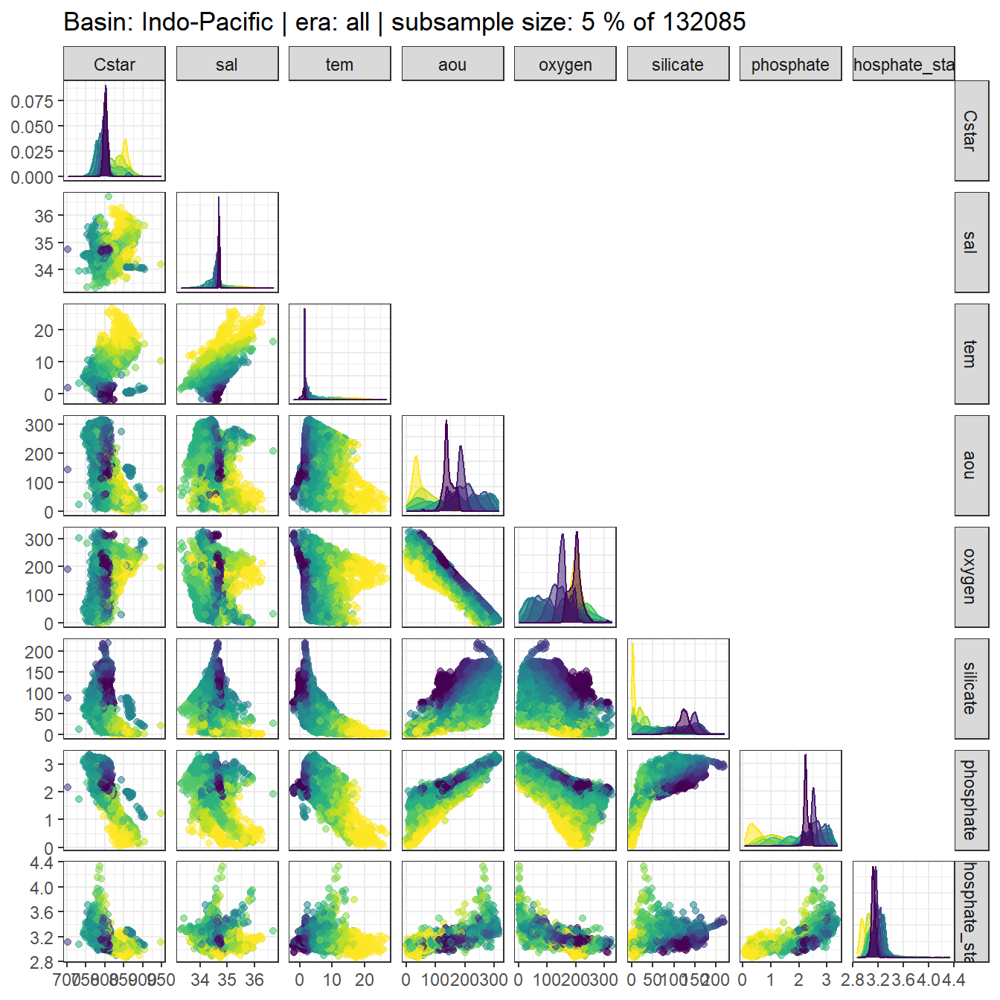
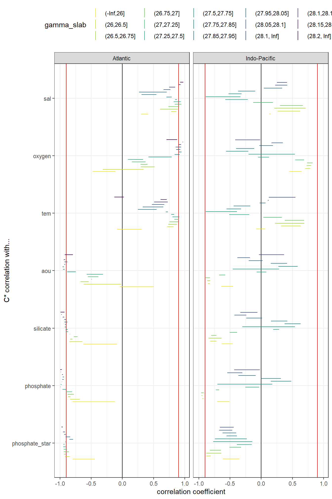

eMLR - assumption testing
Jens Daniel Müller
20 November, 2020
Last updated: 2020-11-20
Checks: 7 0
Knit directory: Cant_eMLR/
This reproducible R Markdown analysis was created with workflowr (version 1.6.2). The Checks tab describes the reproducibility checks that were applied when the results were created. The Past versions tab lists the development history.
Great! Since the R Markdown file has been committed to the Git repository, you know the exact version of the code that produced these results.
Great job! The global environment was empty. Objects defined in the global environment can affect the analysis in your R Markdown file in unknown ways. For reproduciblity it’s best to always run the code in an empty environment.
The command set.seed(20200707) was run prior to running the code in the R Markdown file. Setting a seed ensures that any results that rely on randomness, e.g. subsampling or permutations, are reproducible.
Great job! Recording the operating system, R version, and package versions is critical for reproducibility.
Nice! There were no cached chunks for this analysis, so you can be confident that you successfully produced the results during this run.
Great job! Using relative paths to the files within your workflowr project makes it easier to run your code on other machines.
Great! You are using Git for version control. Tracking code development and connecting the code version to the results is critical for reproducibility.
The results in this page were generated with repository version 21f6e29. See the Past versions tab to see a history of the changes made to the R Markdown and HTML files.
Note that you need to be careful to ensure that all relevant files for the analysis have been committed to Git prior to generating the results (you can use wflow_publish or wflow_git_commit). workflowr only checks the R Markdown file, but you know if there are other scripts or data files that it depends on. Below is the status of the Git repository when the results were generated:
Ignored files:
Ignored: .Rproj.user/
Ignored: data/
Ignored: dump/
Note that any generated files, e.g. HTML, png, CSS, etc., are not included in this status report because it is ok for generated content to have uncommitted changes.
These are the previous versions of the repository in which changes were made to the R Markdown (analysis/eMLR_assumption_testing.Rmd) and HTML (docs/eMLR_assumption_testing.html) files. If you’ve configured a remote Git repository (see ?wflow_git_remote), click on the hyperlinks in the table below to view the files as they were in that past version.
| File | Version | Author | Date | Message |
|---|---|---|---|---|
| html | e563eef | jens-daniel-mueller | 2020-11-20 | Build site. |
| html | e21aae9 | jens-daniel-mueller | 2020-11-20 | Build site. |
| Rmd | f2234de | jens-daniel-mueller | 2020-11-20 | use setup child Rmd file |
| html | eb5dc10 | jens-daniel-mueller | 2020-11-18 | Build site. |
| Rmd | d6968a0 | jens-daniel-mueller | 2020-11-18 | rebuild model runs |
| html | fc70a34 | jens-daniel-mueller | 2020-11-10 | Build site. |
| html | b170b79 | jens-daniel-mueller | 2020-11-03 | Build site. |
| html | 411a35b | jens-daniel-mueller | 2020-10-02 | Build site. |
| html | 0d38979 | jens-daniel-mueller | 2020-10-01 | Build site. |
| html | 4578cfa | jens-daniel-mueller | 2020-09-19 | Build site. |
| html | d59f716 | jens-daniel-mueller | 2020-09-18 | Build site. |
| html | f5a20ac | jens-daniel-mueller | 2020-09-17 | Build site. |
| html | cf64460 | jens-daniel-mueller | 2020-09-17 | Build site. |
| html | d43d9e2 | jens-daniel-mueller | 2020-09-16 | Build site. |
| html | 1f3319a | jens-daniel-mueller | 2020-09-16 | Build site. |
| html | da91d98 | jens-daniel-mueller | 2020-09-10 | Build site. |
| html | a34a239 | jens-daniel-mueller | 2020-09-10 | Build site. |
| html | c3ffdfd | jens-daniel-mueller | 2020-09-08 | Build site. |
| Rmd | 04ee730 | jens-daniel-mueller | 2020-09-08 | rebuild after revision |
| html | a50f053 | jens-daniel-mueller | 2020-09-07 | Build site. |
| html | da445a6 | jens-daniel-mueller | 2020-09-04 | Build site. |
| html | fa11a74 | jens-daniel-mueller | 2020-09-02 | Build site. |
| html | 429aab3 | jens-daniel-mueller | 2020-09-01 | Build site. |
| html | f4216dd | jens-daniel-mueller | 2020-09-01 | Build site. |
| Rmd | 8f3ce45 | jens-daniel-mueller | 2020-09-01 | rebuild without PO4 star selection, oxygen only |
| html | 13a76d5 | jens-daniel-mueller | 2020-08-28 | Build site. |
| html | 27404de | jens-daniel-mueller | 2020-08-27 | Build site. |
| html | b610bf7 | jens-daniel-mueller | 2020-08-27 | Build site. |
| Rmd | 96ab537 | jens-daniel-mueller | 2020-08-27 | revised |
| html | b6d0e6a | jens-daniel-mueller | 2020-08-27 | Build site. |
| html | f40e48b | jens-daniel-mueller | 2020-08-26 | Build site. |
| html | ec20f40 | jens-daniel-mueller | 2020-08-24 | Build site. |
| Rmd | a804955 | jens-daniel-mueller | 2020-08-24 | split mapping into 2 rmds, po4star selection in parameters, use po4star nitrate |
| html | 5ffe187 | jens-daniel-mueller | 2020-08-20 | Build site. |
| html | 1064ef8 | jens-daniel-mueller | 2020-08-19 | Build site. |
| Rmd | 94f9375 | jens-daniel-mueller | 2020-08-19 | split emlr into data preparation, assumption testing, and model fitting |
| html | 9af9978 | jens-daniel-mueller | 2020-08-19 | Build site. |
| Rmd | a6cb023 | jens-daniel-mueller | 2020-08-19 | split emlr into data preparation, assumption testing, and model fitting |
1 Libraries
Loading libraries specific to the the analysis performed in this section.
library(lubridate)
library(GGally)
library(olsrr)
library(knitr)
library(kableExtra)
library(broom)
library(corrr)2 Required data
Required are:
- cleaned and prepared GLODAPv2.2020 file
GLODAP <-
read_csv(
here::here(
"data/interim",
"GLODAPv2.2020_MLR_fitting_ready.csv"
)
)3 Predictor correlation
The correlation between:
- pairs of seven potential predictor variables and
- C* and seven potential predictor variables
were investigated based on:
- property-property plots and
- calculated correlation coeffcients.
3.1 Correlation plots
For an overview, a random subset of data from all eras was plotted separately for both basins, with color indicating neutral density slabs (high density = dark-purple color).
GLODAP %>%
filter(basin == "Atlantic") %>%
sample_frac(0.05) %>%
ggpairs(columns = c("Cstar",
"sal",
"tem",
"aou",
"oxygen",
"silicate",
"phosphate",
"phosphate_star"),
upper = "blank",
ggplot2::aes(col = gamma_slab, fill = gamma_slab, alpha = 0.01)) +
scale_fill_viridis_d(direction = -1) +
scale_color_viridis_d(direction = -1) +
labs(title = paste("Basin: Atlantic | era: all | subsample size: 5 % of",
nrow(GLODAP %>% filter(basin == "Atlantic"))))
GLODAP %>%
filter(basin == "Indo-Pacific") %>%
sample_frac(0.05) %>%
ggpairs(columns = c("Cstar",
"sal",
"tem",
"aou",
"oxygen",
"silicate",
"phosphate",
"phosphate_star"),
upper = "blank",
ggplot2::aes(col = gamma_slab, fill = gamma_slab, alpha = 0.01)) +
scale_fill_viridis_d(direction = -1) +
scale_color_viridis_d(direction = -1) +
labs(title = paste("Basin: Indo-Pacific | era: all | subsample size: 5 % of",
nrow(GLODAP %>% filter(basin == "Indo-Pacific") )))
Individual correlation plots for each basin, era and neutral density (gamma) slab are available here.
for (i_basin in unique(GLODAP$basin)) {
for (i_era in unique(GLODAP$era)) {
# i_basin <- unique(GLODAP$basin)[1]
# i_era <- unique(GLODAP$era)[1]
print(i_basin)
print(i_era)
GLODAP_basin_era <- GLODAP %>%
filter(basin == i_basin,
era == i_era)
for (i_gamma_slab in unique(GLODAP_basin_era$gamma_slab)) {
# i_gamma_slab <- unique(GLODAP_basin_era$gamma_slab)[5]
print(i_gamma_slab)
GLODAP_highlight <- GLODAP_basin_era %>%
mutate(gamma_highlight = if_else(gamma_slab == i_gamma_slab,
"in", "out")) %>%
arrange(desc(gamma_highlight))
p <- GLODAP_highlight %>%
ggpairs(columns = c("Cstar",
"sal",
"tem",
"aou",
"oxygen",
"silicate",
"phosphate",
"phosphate_star"),
ggplot2::aes(col = gamma_highlight, fill = gamma_highlight, alpha = 0.01)) +
scale_fill_manual( values = c("red", "grey")) +
scale_color_manual(values = c("red", "grey")) +
labs(title = paste(i_basin,
"|", i_era,
"| Gamma slab", i_gamma_slab,
"| # obs total", nrow(GLODAP_basin_era),
"| # obs slab", nrow(GLODAP_highlight %>%
filter(gamma_highlight == "in"))))
png(here::here("output/figure/eMLR/predictor_correlation",
paste("predictor_correlation", i_basin, i_era, i_gamma_slab, ".png", sep = "_")),
width = 12, height = 12, units = "in", res = 300)
print(p)
dev.off()
}
}
}3.2 Correlation assesment
3.2.1 Calculation of correlation coeffcients
Correlation coefficients were calculated indivdually within each slabs, era and basin.
for (i_basin in unique(GLODAP$basin)) {
for (i_era in unique(GLODAP$era)) {
# i_basin <- unique(GLODAP$basin)[1]
# i_era <- unique(GLODAP$era)[1]
print(i_basin)
print(i_era)
GLODAP_basin_era <- GLODAP %>%
filter(basin == i_basin,
era == i_era) %>%
select(basin,
era,
gamma_slab,
Cstar,
sal,
tem,
aou,
oxygen,
silicate,
phosphate,
phosphate_star)
for (i_gamma_slab in unique(GLODAP_basin_era$gamma_slab)) {
# i_gamma_slab <- unique(GLODAP_basin_era$gamma_slab)[5]
print(i_gamma_slab)
GLODAP_basin_era_slab <- GLODAP_basin_era %>%
filter(gamma_slab == i_gamma_slab)
cor_Cstar_predictor_temp <- GLODAP_basin_era_slab %>%
select(-c(basin, era, gamma_slab)) %>%
correlate() %>%
focus(Cstar) %>%
mutate(basin = i_basin,
era = i_era,
gamma_slab = i_gamma_slab)
if (exists("cor_Cstar_predictor")) {
cor_Cstar_predictor <- bind_rows(cor_Cstar_predictor, cor_Cstar_predictor_temp)
}
if (!exists("cor_Cstar_predictor")) {
cor_Cstar_predictor <- cor_Cstar_predictor_temp
}
cor_predictors_temp <- GLODAP_basin_era_slab %>%
select(-c(basin, era, gamma_slab)) %>%
correlate() %>%
shave %>%
stretch() %>%
filter(!is.na(r),
x != "Cstar",
y != "Cstar") %>%
mutate(pair = paste(x, y, sep = " + ")) %>%
select(-c(x, y)) %>%
mutate(basin = i_basin,
era = i_era,
gamma_slab = i_gamma_slab)
if (exists("cor_predictors")) {
cor_predictors <- bind_rows(cor_predictors, cor_predictors_temp)
}
if (!exists("cor_predictors")) {
cor_predictors <- cor_predictors_temp
}
}
}
}
cor_predictors %>%
write_csv(here::here("data/eMLR",
"cor_predictors.csv"))
cor_Cstar_predictor %>%
write_csv(here::here("data/eMLR",
"cor_Cstar_predictor.csv"))
rm(cor_predictors_temp, cor_Cstar_predictor_temp,
i_gamma_slab, i_era, i_basin,
GLODAP_basin_era, GLODAP_basin_era_slab)3.2.2 Predictor pairs
Below, the range of correlations coefficients for each predictor pair is plotted per basin (facet) and density slab (color). Note that the range indicates the min and max values of in total 3 calculated coefficients (one per era).
cor_predictors <-
read_csv(here::here("data/eMLR",
"cor_predictors.csv"))
cor_predictors_stats <- cor_predictors %>%
group_by(pair, basin, gamma_slab) %>%
summarise(mean_r = mean(r),
min_r = min(r),
max_r = max(r)) %>%
ungroup()
cor_predictors_stats %>%
mutate(pair = reorder(pair, mean_r)) %>%
ggplot() +
geom_vline(xintercept = c(-0.9, 0.9), col = "red") +
geom_vline(xintercept = 0) +
geom_linerange(
aes(y = pair, xmin = min_r, xmax = max_r, col = gamma_slab),
position = position_dodge(width = 0.6)) +
facet_wrap(~basin) +
scale_color_viridis_d(direction = -1) +
labs(x = "correlation coefficient", y = "") +
theme(legend.position = "top")
kable(cor_predictors_stats) %>%
add_header_above() %>%
kable_styling() %>%
scroll_box(width = "100%", height = "400px")| pair | basin | gamma_slab | mean_r | min_r | max_r |
|---|---|---|---|---|---|
| aou + oxygen | Atlantic | (-Inf,26] | -0.9156383 | -0.9445809 | -0.8853583 |
| aou + oxygen | Atlantic | (26,26.5] | -0.8818909 | -0.9096598 | -0.8408464 |
| aou + oxygen | Atlantic | (26.5,26.75] | -0.9694777 | -0.9820812 | -0.9518955 |
| aou + oxygen | Atlantic | (26.75,27] | -0.9807877 | -0.9913860 | -0.9723059 |
| aou + oxygen | Atlantic | (27,27.25] | -0.9757416 | -0.9845091 | -0.9649016 |
| aou + oxygen | Atlantic | (27.25,27.5] | -0.9433511 | -0.9537903 | -0.9237667 |
| aou + oxygen | Atlantic | (27.5,27.75] | -0.9273577 | -0.9637851 | -0.8959388 |
| aou + oxygen | Atlantic | (27.75,27.85] | -0.9697352 | -0.9805183 | -0.9586303 |
| aou + oxygen | Atlantic | (27.85,27.95] | -0.9882375 | -0.9927869 | -0.9857516 |
| aou + oxygen | Atlantic | (27.95,28.05] | -0.9883683 | -0.9917267 | -0.9838260 |
| aou + oxygen | Atlantic | (28.05,28.1] | -0.9891820 | -0.9946704 | -0.9820109 |
| aou + oxygen | Atlantic | (28.1,28.15] | -0.9933523 | -0.9944959 | -0.9921273 |
| aou + oxygen | Atlantic | (28.15,28.2] | -0.9980452 | -0.9988573 | -0.9972481 |
| aou + oxygen | Atlantic | (28.2, Inf] | -0.9680972 | -0.9802830 | -0.9559122 |
| aou + oxygen | Indo-Pacific | (-Inf,26] | -0.9219204 | -0.9640735 | -0.8942352 |
| aou + oxygen | Indo-Pacific | (26,26.5] | -0.9817628 | -0.9850645 | -0.9753525 |
| aou + oxygen | Indo-Pacific | (26.5,26.75] | -0.9857173 | -0.9883817 | -0.9829369 |
| aou + oxygen | Indo-Pacific | (26.75,27] | -0.9842232 | -0.9856995 | -0.9834019 |
| aou + oxygen | Indo-Pacific | (27,27.25] | -0.9909997 | -0.9929278 | -0.9871677 |
| aou + oxygen | Indo-Pacific | (27.25,27.5] | -0.9923429 | -0.9952643 | -0.9869305 |
| aou + oxygen | Indo-Pacific | (27.5,27.75] | -0.9931741 | -0.9966909 | -0.9872365 |
| aou + oxygen | Indo-Pacific | (27.75,27.85] | -0.9961741 | -0.9989593 | -0.9925397 |
| aou + oxygen | Indo-Pacific | (27.85,27.95] | -0.9964709 | -0.9987338 | -0.9942577 |
| aou + oxygen | Indo-Pacific | (27.95,28.05] | -0.9948691 | -0.9960943 | -0.9932389 |
| aou + oxygen | Indo-Pacific | (28.05,28.1] | -0.9949611 | -0.9958482 | -0.9939395 |
| aou + oxygen | Indo-Pacific | (28.1, Inf] | -0.9910458 | -0.9926673 | -0.9881483 |
| aou + phosphate | Atlantic | (-Inf,26] | 0.5613720 | 0.3316113 | 0.7495194 |
| aou + phosphate | Atlantic | (26,26.5] | 0.7653502 | 0.6379788 | 0.8975025 |
| aou + phosphate | Atlantic | (26.5,26.75] | 0.8860370 | 0.8456936 | 0.9268229 |
| aou + phosphate | Atlantic | (26.75,27] | 0.8762424 | 0.8347279 | 0.9172064 |
| aou + phosphate | Atlantic | (27,27.25] | 0.8424554 | 0.8010751 | 0.8828494 |
| aou + phosphate | Atlantic | (27.25,27.5] | 0.7283760 | 0.6665595 | 0.7927554 |
| aou + phosphate | Atlantic | (27.5,27.75] | 0.8620492 | 0.8195771 | 0.9099717 |
| aou + phosphate | Atlantic | (27.75,27.85] | 0.9376632 | 0.9237213 | 0.9632500 |
| aou + phosphate | Atlantic | (27.85,27.95] | 0.9530070 | 0.9477466 | 0.9627783 |
| aou + phosphate | Atlantic | (27.95,28.05] | 0.9621025 | 0.9508355 | 0.9828487 |
| aou + phosphate | Atlantic | (28.05,28.1] | 0.9685647 | 0.9487246 | 0.9860366 |
| aou + phosphate | Atlantic | (28.1,28.15] | 0.9810695 | 0.9776049 | 0.9832747 |
| aou + phosphate | Atlantic | (28.15,28.2] | 0.9923772 | 0.9882804 | 0.9944404 |
| aou + phosphate | Atlantic | (28.2, Inf] | 0.6057439 | 0.4977150 | 0.6770536 |
| aou + phosphate | Indo-Pacific | (-Inf,26] | 0.9395887 | 0.9074036 | 0.9643282 |
| aou + phosphate | Indo-Pacific | (26,26.5] | 0.9556605 | 0.9505780 | 0.9629453 |
| aou + phosphate | Indo-Pacific | (26.5,26.75] | 0.9525681 | 0.9420565 | 0.9630229 |
| aou + phosphate | Indo-Pacific | (26.75,27] | 0.9505818 | 0.9463419 | 0.9537525 |
| aou + phosphate | Indo-Pacific | (27,27.25] | 0.9697662 | 0.9579781 | 0.9805700 |
| aou + phosphate | Indo-Pacific | (27.25,27.5] | 0.9724175 | 0.9572454 | 0.9801672 |
| aou + phosphate | Indo-Pacific | (27.5,27.75] | 0.9740620 | 0.9591294 | 0.9820516 |
| aou + phosphate | Indo-Pacific | (27.75,27.85] | 0.9801256 | 0.9680516 | 0.9882885 |
| aou + phosphate | Indo-Pacific | (27.85,27.95] | 0.9777763 | 0.9657076 | 0.9884881 |
| aou + phosphate | Indo-Pacific | (27.95,28.05] | 0.9640016 | 0.9510639 | 0.9741448 |
| aou + phosphate | Indo-Pacific | (28.05,28.1] | 0.9523882 | 0.9420104 | 0.9656907 |
| aou + phosphate | Indo-Pacific | (28.1, Inf] | 0.7713437 | 0.7101521 | 0.8250526 |
| aou + phosphate_star | Atlantic | (-Inf,26] | 0.0772489 | -0.3331070 | 0.3779936 |
| aou + phosphate_star | Atlantic | (26,26.5] | 0.4381491 | 0.1780585 | 0.7489838 |
| aou + phosphate_star | Atlantic | (26.5,26.75] | 0.4596855 | 0.3116008 | 0.6392432 |
| aou + phosphate_star | Atlantic | (26.75,27] | 0.2212638 | 0.0809328 | 0.3198287 |
| aou + phosphate_star | Atlantic | (27,27.25] | 0.2649047 | 0.0434229 | 0.4681605 |
| aou + phosphate_star | Atlantic | (27.25,27.5] | 0.2286507 | 0.1482131 | 0.3531908 |
| aou + phosphate_star | Atlantic | (27.5,27.75] | 0.5893997 | 0.5265659 | 0.6526516 |
| aou + phosphate_star | Atlantic | (27.75,27.85] | 0.7246361 | 0.6728101 | 0.8007215 |
| aou + phosphate_star | Atlantic | (27.85,27.95] | 0.7039572 | 0.6575275 | 0.7280965 |
| aou + phosphate_star | Atlantic | (27.95,28.05] | 0.8220567 | 0.7538604 | 0.9179436 |
| aou + phosphate_star | Atlantic | (28.05,28.1] | 0.8839692 | 0.8196508 | 0.9494594 |
| aou + phosphate_star | Atlantic | (28.1,28.15] | 0.9269742 | 0.9167302 | 0.9354979 |
| aou + phosphate_star | Atlantic | (28.15,28.2] | 0.9753069 | 0.9585640 | 0.9842209 |
| aou + phosphate_star | Atlantic | (28.2, Inf] | -0.0497959 | -0.3233294 | 0.0881583 |
| aou + phosphate_star | Indo-Pacific | (-Inf,26] | 0.6604877 | 0.5373306 | 0.7231620 |
| aou + phosphate_star | Indo-Pacific | (26,26.5] | 0.5829236 | 0.5239282 | 0.6244538 |
| aou + phosphate_star | Indo-Pacific | (26.5,26.75] | 0.4254497 | 0.1835868 | 0.5779174 |
| aou + phosphate_star | Indo-Pacific | (26.75,27] | 0.3774440 | 0.3156025 | 0.4680905 |
| aou + phosphate_star | Indo-Pacific | (27,27.25] | 0.1072731 | -0.0537191 | 0.2227794 |
| aou + phosphate_star | Indo-Pacific | (27.25,27.5] | -0.4389586 | -0.4752115 | -0.4041160 |
| aou + phosphate_star | Indo-Pacific | (27.5,27.75] | -0.6242887 | -0.6923285 | -0.5785126 |
| aou + phosphate_star | Indo-Pacific | (27.75,27.85] | -0.5140174 | -0.6072076 | -0.4636152 |
| aou + phosphate_star | Indo-Pacific | (27.85,27.95] | -0.1464237 | -0.1683655 | -0.1202353 |
| aou + phosphate_star | Indo-Pacific | (27.95,28.05] | 0.1560053 | 0.0599954 | 0.2165089 |
| aou + phosphate_star | Indo-Pacific | (28.05,28.1] | 0.3208328 | 0.2595290 | 0.4133426 |
| aou + phosphate_star | Indo-Pacific | (28.1, Inf] | -0.6455057 | -0.6890703 | -0.5907867 |
| aou + silicate | Atlantic | (-Inf,26] | 0.3389468 | 0.0988802 | 0.5696553 |
| aou + silicate | Atlantic | (26,26.5] | 0.6796457 | 0.5835081 | 0.7660910 |
| aou + silicate | Atlantic | (26.5,26.75] | 0.8916897 | 0.8700364 | 0.9268693 |
| aou + silicate | Atlantic | (26.75,27] | 0.8756579 | 0.8434167 | 0.8983606 |
| aou + silicate | Atlantic | (27,27.25] | 0.8003437 | 0.7423022 | 0.8745827 |
| aou + silicate | Atlantic | (27.25,27.5] | 0.5334951 | 0.4174402 | 0.6926184 |
| aou + silicate | Atlantic | (27.5,27.75] | 0.6797918 | 0.6472319 | 0.7266594 |
| aou + silicate | Atlantic | (27.75,27.85] | 0.8535984 | 0.8267614 | 0.8795120 |
| aou + silicate | Atlantic | (27.85,27.95] | 0.9000279 | 0.8857641 | 0.9086476 |
| aou + silicate | Atlantic | (27.95,28.05] | 0.9457431 | 0.9394394 | 0.9579700 |
| aou + silicate | Atlantic | (28.05,28.1] | 0.9705749 | 0.9578543 | 0.9827890 |
| aou + silicate | Atlantic | (28.1,28.15] | 0.9777376 | 0.9738281 | 0.9807655 |
| aou + silicate | Atlantic | (28.15,28.2] | 0.9915883 | 0.9880007 | 0.9934440 |
| aou + silicate | Atlantic | (28.2, Inf] | 0.5954151 | 0.5163938 | 0.7348279 |
| aou + silicate | Indo-Pacific | (-Inf,26] | 0.7412268 | 0.6747236 | 0.8092966 |
| aou + silicate | Indo-Pacific | (26,26.5] | 0.6573136 | 0.5375263 | 0.7561173 |
| aou + silicate | Indo-Pacific | (26.5,26.75] | 0.6141172 | 0.4158665 | 0.7351491 |
| aou + silicate | Indo-Pacific | (26.75,27] | 0.7474074 | 0.6948118 | 0.7743269 |
| aou + silicate | Indo-Pacific | (27,27.25] | 0.8768925 | 0.8481850 | 0.9057930 |
| aou + silicate | Indo-Pacific | (27.25,27.5] | 0.9041293 | 0.8737153 | 0.9350248 |
| aou + silicate | Indo-Pacific | (27.5,27.75] | 0.9198845 | 0.8764979 | 0.9486666 |
| aou + silicate | Indo-Pacific | (27.75,27.85] | 0.9655205 | 0.9482083 | 0.9761985 |
| aou + silicate | Indo-Pacific | (27.85,27.95] | 0.9613731 | 0.9482803 | 0.9699239 |
| aou + silicate | Indo-Pacific | (27.95,28.05] | 0.9467944 | 0.9379101 | 0.9523270 |
| aou + silicate | Indo-Pacific | (28.05,28.1] | 0.9469109 | 0.9449646 | 0.9484274 |
| aou + silicate | Indo-Pacific | (28.1, Inf] | 0.6247641 | 0.4989404 | 0.6883816 |
| oxygen + phosphate | Atlantic | (-Inf,26] | -0.3267094 | -0.5267768 | -0.0972051 |
| oxygen + phosphate | Atlantic | (26,26.5] | -0.4233171 | -0.5795976 | -0.2455584 |
| oxygen + phosphate | Atlantic | (26.5,26.75] | -0.7524477 | -0.8215906 | -0.6448276 |
| oxygen + phosphate | Atlantic | (26.75,27] | -0.7689476 | -0.8596036 | -0.6849105 |
| oxygen + phosphate | Atlantic | (27,27.25] | -0.7081353 | -0.7670183 | -0.6190882 |
| oxygen + phosphate | Atlantic | (27.25,27.5] | -0.4677818 | -0.5739606 | -0.3367315 |
| oxygen + phosphate | Atlantic | (27.5,27.75] | -0.6305121 | -0.7834725 | -0.5006841 |
| oxygen + phosphate | Atlantic | (27.75,27.85] | -0.8342116 | -0.9011634 | -0.7892901 |
| oxygen + phosphate | Atlantic | (27.85,27.95] | -0.9037456 | -0.9322443 | -0.8875711 |
| oxygen + phosphate | Atlantic | (27.95,28.05] | -0.9239894 | -0.9639734 | -0.8917577 |
| oxygen + phosphate | Atlantic | (28.05,28.1] | -0.9321368 | -0.9739343 | -0.8819153 |
| oxygen + phosphate | Atlantic | (28.1,28.15] | -0.9584964 | -0.9662070 | -0.9487718 |
| oxygen + phosphate | Atlantic | (28.15,28.2] | -0.9884696 | -0.9938124 | -0.9785585 |
| oxygen + phosphate | Atlantic | (28.2, Inf] | -0.4060608 | -0.4847941 | -0.3266848 |
| oxygen + phosphate | Indo-Pacific | (-Inf,26] | -0.7857240 | -0.9017906 | -0.6906567 |
| oxygen + phosphate | Indo-Pacific | (26,26.5] | -0.8890695 | -0.9084333 | -0.8655395 |
| oxygen + phosphate | Indo-Pacific | (26.5,26.75] | -0.8927815 | -0.9161065 | -0.8768543 |
| oxygen + phosphate | Indo-Pacific | (26.75,27] | -0.8852016 | -0.8911043 | -0.8767115 |
| oxygen + phosphate | Indo-Pacific | (27,27.25] | -0.9342740 | -0.9560634 | -0.9070892 |
| oxygen + phosphate | Indo-Pacific | (27.25,27.5] | -0.9474152 | -0.9675076 | -0.9108710 |
| oxygen + phosphate | Indo-Pacific | (27.5,27.75] | -0.9583231 | -0.9796090 | -0.9245480 |
| oxygen + phosphate | Indo-Pacific | (27.75,27.85] | -0.9724827 | -0.9887399 | -0.9513393 |
| oxygen + phosphate | Indo-Pacific | (27.85,27.95] | -0.9675918 | -0.9861357 | -0.9494088 |
| oxygen + phosphate | Indo-Pacific | (27.95,28.05] | -0.9408335 | -0.9551042 | -0.9223152 |
| oxygen + phosphate | Indo-Pacific | (28.05,28.1] | -0.9246526 | -0.9418615 | -0.9153923 |
| oxygen + phosphate | Indo-Pacific | (28.1, Inf] | -0.6928601 | -0.7569192 | -0.6137201 |
| oxygen + phosphate_star | Atlantic | (-Inf,26] | 0.2085786 | -0.0711983 | 0.5633874 |
| oxygen + phosphate_star | Atlantic | (26,26.5] | -0.0159726 | -0.3245808 | 0.2656620 |
| oxygen + phosphate_star | Atlantic | (26.5,26.75] | -0.2418029 | -0.4534975 | -0.1340114 |
| oxygen + phosphate_star | Atlantic | (26.75,27] | -0.0359316 | -0.1219506 | 0.0465560 |
| oxygen + phosphate_star | Atlantic | (27,27.25] | -0.0566381 | -0.2752126 | 0.1299694 |
| oxygen + phosphate_star | Atlantic | (27.25,27.5] | 0.0980894 | -0.0558290 | 0.2006166 |
| oxygen + phosphate_star | Atlantic | (27.5,27.75] | -0.2682160 | -0.4456931 | -0.1123938 |
| oxygen + phosphate_star | Atlantic | (27.75,27.85] | -0.5467772 | -0.6790827 | -0.4778159 |
| oxygen + phosphate_star | Atlantic | (27.85,27.95] | -0.6000341 | -0.6529679 | -0.5311606 |
| oxygen + phosphate_star | Atlantic | (27.95,28.05] | -0.7468685 | -0.8766255 | -0.6764406 |
| oxygen + phosphate_star | Atlantic | (28.05,28.1] | -0.8199293 | -0.9255214 | -0.7086619 |
| oxygen + phosphate_star | Atlantic | (28.1,28.15] | -0.8857890 | -0.9031921 | -0.8661203 |
| oxygen + phosphate_star | Atlantic | (28.15,28.2] | -0.9674776 | -0.9823756 | -0.9407061 |
| oxygen + phosphate_star | Atlantic | (28.2, Inf] | 0.2809233 | 0.1537997 | 0.4961447 |
| oxygen + phosphate_star | Indo-Pacific | (-Inf,26] | -0.3725307 | -0.5588892 | -0.1584270 |
| oxygen + phosphate_star | Indo-Pacific | (26,26.5] | -0.4286648 | -0.4629473 | -0.3777906 |
| oxygen + phosphate_star | Indo-Pacific | (26.5,26.75] | -0.2780801 | -0.4247969 | -0.0224832 |
| oxygen + phosphate_star | Indo-Pacific | (26.75,27] | -0.2147898 | -0.3068553 | -0.1584039 |
| oxygen + phosphate_star | Indo-Pacific | (27,27.25] | 0.0137639 | -0.1176943 | 0.2017991 |
| oxygen + phosphate_star | Indo-Pacific | (27.25,27.5] | 0.5242879 | 0.4742381 | 0.5617222 |
| oxygen + phosphate_star | Indo-Pacific | (27.5,27.75] | 0.6806490 | 0.6507013 | 0.7144871 |
| oxygen + phosphate_star | Indo-Pacific | (27.75,27.85] | 0.5518396 | 0.5116497 | 0.6108994 |
| oxygen + phosphate_star | Indo-Pacific | (27.85,27.95] | 0.1964988 | 0.1418965 | 0.2280981 |
| oxygen + phosphate_star | Indo-Pacific | (27.95,28.05] | -0.0743692 | -0.1275806 | 0.0169182 |
| oxygen + phosphate_star | Indo-Pacific | (28.05,28.1] | -0.2394102 | -0.3450284 | -0.1634257 |
| oxygen + phosphate_star | Indo-Pacific | (28.1, Inf] | 0.7321179 | 0.6936251 | 0.7645888 |
| oxygen + silicate | Atlantic | (-Inf,26] | -0.0812059 | -0.3722335 | 0.1581093 |
| oxygen + silicate | Atlantic | (26,26.5] | -0.3486820 | -0.4113572 | -0.2270809 |
| oxygen + silicate | Atlantic | (26.5,26.75] | -0.7799639 | -0.8392793 | -0.7130457 |
| oxygen + silicate | Atlantic | (26.75,27] | -0.7882697 | -0.8512577 | -0.7247730 |
| oxygen + silicate | Atlantic | (27,27.25] | -0.6694259 | -0.7675018 | -0.6124806 |
| oxygen + silicate | Atlantic | (27.25,27.5] | -0.2535425 | -0.4607839 | -0.1470215 |
| oxygen + silicate | Atlantic | (27.5,27.75] | -0.4172718 | -0.5571524 | -0.3062923 |
| oxygen + silicate | Atlantic | (27.75,27.85] | -0.7320604 | -0.7947274 | -0.6736373 |
| oxygen + silicate | Atlantic | (27.85,27.95] | -0.8337462 | -0.8625771 | -0.8056455 |
| oxygen + silicate | Atlantic | (27.95,28.05] | -0.8927697 | -0.9193967 | -0.8698334 |
| oxygen + silicate | Atlantic | (28.05,28.1] | -0.9299240 | -0.9626002 | -0.8927343 |
| oxygen + silicate | Atlantic | (28.1,28.15] | -0.9522851 | -0.9567046 | -0.9491942 |
| oxygen + silicate | Atlantic | (28.15,28.2] | -0.9880028 | -0.9914727 | -0.9822509 |
| oxygen + silicate | Atlantic | (28.2, Inf] | -0.4013603 | -0.5578974 | -0.2769951 |
| oxygen + silicate | Indo-Pacific | (-Inf,26] | -0.5190511 | -0.7095630 | -0.3780615 |
| oxygen + silicate | Indo-Pacific | (26,26.5] | -0.5457519 | -0.6721921 | -0.4184750 |
| oxygen + silicate | Indo-Pacific | (26.5,26.75] | -0.4993561 | -0.6470560 | -0.2821384 |
| oxygen + silicate | Indo-Pacific | (26.75,27] | -0.6369644 | -0.6757433 | -0.5697249 |
| oxygen + silicate | Indo-Pacific | (27,27.25] | -0.8173016 | -0.8581619 | -0.7697018 |
| oxygen + silicate | Indo-Pacific | (27.25,27.5] | -0.8581380 | -0.9042471 | -0.8050037 |
| oxygen + silicate | Indo-Pacific | (27.5,27.75] | -0.8814150 | -0.9238485 | -0.8096287 |
| oxygen + silicate | Indo-Pacific | (27.75,27.85] | -0.9497311 | -0.9721806 | -0.9176141 |
| oxygen + silicate | Indo-Pacific | (27.85,27.95] | -0.9450505 | -0.9629198 | -0.9228462 |
| oxygen + silicate | Indo-Pacific | (27.95,28.05] | -0.9200634 | -0.9298993 | -0.9049368 |
| oxygen + silicate | Indo-Pacific | (28.05,28.1] | -0.9211275 | -0.9240554 | -0.9182833 |
| oxygen + silicate | Indo-Pacific | (28.1, Inf] | -0.5384119 | -0.6180874 | -0.3842565 |
| phosphate + phosphate_star | Atlantic | (-Inf,26] | 0.8437887 | 0.7675161 | 0.8853521 |
| phosphate + phosphate_star | Atlantic | (26,26.5] | 0.9063021 | 0.8693127 | 0.9589086 |
| phosphate + phosphate_star | Atlantic | (26.5,26.75] | 0.8132196 | 0.7151354 | 0.8806756 |
| phosphate + phosphate_star | Atlantic | (26.75,27] | 0.6520499 | 0.4703877 | 0.7504359 |
| phosphate + phosphate_star | Atlantic | (27,27.25] | 0.7336976 | 0.5727959 | 0.8279409 |
| phosphate + phosphate_star | Atlantic | (27.25,27.5] | 0.8304532 | 0.7868062 | 0.8549039 |
| phosphate + phosphate_star | Atlantic | (27.5,27.75] | 0.9138472 | 0.9054805 | 0.9196422 |
| phosphate + phosphate_star | Atlantic | (27.75,27.85] | 0.9166768 | 0.9033373 | 0.9301652 |
| phosphate + phosphate_star | Atlantic | (27.85,27.95] | 0.8835382 | 0.8617558 | 0.9060887 |
| phosphate + phosphate_star | Atlantic | (27.95,28.05] | 0.9431975 | 0.9148476 | 0.9730351 |
| phosphate + phosphate_star | Atlantic | (28.05,28.1] | 0.9710140 | 0.9575808 | 0.9872966 |
| phosphate + phosphate_star | Atlantic | (28.1,28.15] | 0.9812994 | 0.9796796 | 0.9833137 |
| phosphate + phosphate_star | Atlantic | (28.15,28.2] | 0.9946036 | 0.9904053 | 0.9970583 |
| phosphate + phosphate_star | Atlantic | (28.2, Inf] | 0.7553910 | 0.6585195 | 0.8179927 |
| phosphate + phosphate_star | Indo-Pacific | (-Inf,26] | 0.8608106 | 0.8234682 | 0.8965863 |
| phosphate + phosphate_star | Indo-Pacific | (26,26.5] | 0.7928867 | 0.7537264 | 0.8338414 |
| phosphate + phosphate_star | Indo-Pacific | (26.5,26.75] | 0.6738294 | 0.5003492 | 0.7969416 |
| phosphate + phosphate_star | Indo-Pacific | (26.75,27] | 0.6426258 | 0.5892234 | 0.7268341 |
| phosphate + phosphate_star | Indo-Pacific | (27,27.25] | 0.3382915 | 0.2292286 | 0.4036458 |
| phosphate + phosphate_star | Indo-Pacific | (27.25,27.5] | -0.2329848 | -0.3061495 | -0.1702263 |
| phosphate + phosphate_star | Indo-Pacific | (27.5,27.75] | -0.4513641 | -0.5593492 | -0.3451534 |
| phosphate + phosphate_star | Indo-Pacific | (27.75,27.85] | -0.3500546 | -0.4855459 | -0.2463028 |
| phosphate + phosphate_star | Indo-Pacific | (27.85,27.95] | 0.0496338 | 0.0243327 | 0.0979872 |
| phosphate + phosphate_star | Indo-Pacific | (27.95,28.05] | 0.4040174 | 0.2800691 | 0.5009501 |
| phosphate + phosphate_star | Indo-Pacific | (28.05,28.1] | 0.5880581 | 0.5261055 | 0.6913194 |
| phosphate + phosphate_star | Indo-Pacific | (28.1, Inf] | -0.0202907 | -0.1178242 | 0.1430309 |
| sal + aou | Atlantic | (-Inf,26] | -0.1665793 | -0.4352518 | 0.2929500 |
| sal + aou | Atlantic | (26,26.5] | -0.3223308 | -0.6746198 | -0.0540519 |
| sal + aou | Atlantic | (26.5,26.75] | -0.2865562 | -0.5309776 | -0.0084286 |
| sal + aou | Atlantic | (26.75,27] | -0.1611972 | -0.2776773 | 0.0125727 |
| sal + aou | Atlantic | (27,27.25] | -0.2742362 | -0.4926274 | -0.0358996 |
| sal + aou | Atlantic | (27.25,27.5] | -0.2153528 | -0.3564458 | -0.1146054 |
| sal + aou | Atlantic | (27.5,27.75] | -0.4495856 | -0.4977639 | -0.3828053 |
| sal + aou | Atlantic | (27.75,27.85] | -0.4374514 | -0.4993829 | -0.3999112 |
| sal + aou | Atlantic | (27.85,27.95] | -0.3354371 | -0.4090995 | -0.2255108 |
| sal + aou | Atlantic | (27.95,28.05] | -0.5506618 | -0.7174899 | -0.3278565 |
| sal + aou | Atlantic | (28.05,28.1] | -0.7521658 | -0.8425078 | -0.6761166 |
| sal + aou | Atlantic | (28.1,28.15] | -0.8386574 | -0.8490167 | -0.8292309 |
| sal + aou | Atlantic | (28.15,28.2] | -0.9524449 | -0.9823050 | -0.9151822 |
| sal + aou | Atlantic | (28.2, Inf] | -0.0458538 | -0.2389343 | 0.2282425 |
| sal + aou | Indo-Pacific | (-Inf,26] | -0.0921352 | -0.1370912 | -0.0452091 |
| sal + aou | Indo-Pacific | (26,26.5] | -0.0372406 | -0.2457572 | 0.1407071 |
| sal + aou | Indo-Pacific | (26.5,26.75] | -0.0401538 | -0.3523571 | 0.2597261 |
| sal + aou | Indo-Pacific | (26.75,27] | -0.1429117 | -0.3339392 | 0.0428638 |
| sal + aou | Indo-Pacific | (27,27.25] | -0.0410803 | -0.1836328 | 0.2277779 |
| sal + aou | Indo-Pacific | (27.25,27.5] | 0.1427795 | 0.0360115 | 0.3277542 |
| sal + aou | Indo-Pacific | (27.5,27.75] | 0.0765128 | -0.0781468 | 0.3098381 |
| sal + aou | Indo-Pacific | (27.75,27.85] | -0.1333178 | -0.4074011 | 0.1798972 |
| sal + aou | Indo-Pacific | (27.85,27.95] | -0.3022736 | -0.6483702 | -0.0037440 |
| sal + aou | Indo-Pacific | (27.95,28.05] | -0.3029720 | -0.4053862 | -0.1661033 |
| sal + aou | Indo-Pacific | (28.05,28.1] | -0.3655729 | -0.4717638 | -0.2642723 |
| sal + aou | Indo-Pacific | (28.1, Inf] | 0.4395812 | 0.3266540 | 0.5029305 |
| sal + oxygen | Atlantic | (-Inf,26] | -0.1990959 | -0.5781444 | 0.0080450 |
| sal + oxygen | Atlantic | (26,26.5] | -0.1208200 | -0.3860516 | 0.1955319 |
| sal + oxygen | Atlantic | (26.5,26.75] | 0.0586153 | -0.1718348 | 0.3299925 |
| sal + oxygen | Atlantic | (26.75,27] | -0.0236745 | -0.1383497 | 0.0788839 |
| sal + oxygen | Atlantic | (27,27.25] | 0.0684403 | -0.1351012 | 0.3033011 |
| sal + oxygen | Atlantic | (27.25,27.5] | -0.1071097 | -0.2055445 | 0.0625540 |
| sal + oxygen | Atlantic | (27.5,27.75] | 0.1043485 | -0.0523484 | 0.2612277 |
| sal + oxygen | Atlantic | (27.75,27.85] | 0.2140414 | 0.1443557 | 0.3258774 |
| sal + oxygen | Atlantic | (27.85,27.95] | 0.2003897 | 0.0688642 | 0.2688575 |
| sal + oxygen | Atlantic | (27.95,28.05] | 0.4428745 | 0.2135168 | 0.6435579 |
| sal + oxygen | Atlantic | (28.05,28.1] | 0.6569416 | 0.5323414 | 0.7901850 |
| sal + oxygen | Atlantic | (28.1,28.15] | 0.7730034 | 0.7552325 | 0.7856960 |
| sal + oxygen | Atlantic | (28.15,28.2] | 0.9338315 | 0.8855621 | 0.9735412 |
| sal + oxygen | Atlantic | (28.2, Inf] | -0.1930831 | -0.4057980 | -0.0534152 |
| sal + oxygen | Indo-Pacific | (-Inf,26] | -0.2148822 | -0.3074739 | -0.1339648 |
| sal + oxygen | Indo-Pacific | (26,26.5] | -0.1376523 | -0.2927981 | 0.0375382 |
| sal + oxygen | Indo-Pacific | (26.5,26.75] | -0.1185253 | -0.4119802 | 0.1777664 |
| sal + oxygen | Indo-Pacific | (26.75,27] | -0.0276859 | -0.2063524 | 0.1624747 |
| sal + oxygen | Indo-Pacific | (27,27.25] | -0.0825332 | -0.3750543 | 0.0725128 |
| sal + oxygen | Indo-Pacific | (27.25,27.5] | -0.2449468 | -0.4667542 | -0.1203361 |
| sal + oxygen | Indo-Pacific | (27.5,27.75] | -0.1568977 | -0.4413456 | 0.0344309 |
| sal + oxygen | Indo-Pacific | (27.75,27.85] | 0.0658022 | -0.2898610 | 0.3802234 |
| sal + oxygen | Indo-Pacific | (27.85,27.95] | 0.2417576 | -0.0904831 | 0.6294063 |
| sal + oxygen | Indo-Pacific | (27.95,28.05] | 0.2225411 | 0.0667294 | 0.3406845 |
| sal + oxygen | Indo-Pacific | (28.05,28.1] | 0.2796108 | 0.1642871 | 0.4001890 |
| sal + oxygen | Indo-Pacific | (28.1, Inf] | -0.5277060 | -0.6023551 | -0.4154610 |
| sal + phosphate | Atlantic | (-Inf,26] | -0.6735155 | -0.7664154 | -0.5962041 |
| sal + phosphate | Atlantic | (26,26.5] | -0.8092638 | -0.8726533 | -0.7737996 |
| sal + phosphate | Atlantic | (26.5,26.75] | -0.6591951 | -0.8007717 | -0.4121211 |
| sal + phosphate | Atlantic | (26.75,27] | -0.5898176 | -0.7115191 | -0.3653983 |
| sal + phosphate | Atlantic | (27,27.25] | -0.7279663 | -0.8349648 | -0.5533928 |
| sal + phosphate | Atlantic | (27.25,27.5] | -0.8005715 | -0.8363360 | -0.7341130 |
| sal + phosphate | Atlantic | (27.5,27.75] | -0.7879183 | -0.8116764 | -0.7621624 |
| sal + phosphate | Atlantic | (27.75,27.85] | -0.6736837 | -0.6828435 | -0.6634514 |
| sal + phosphate | Atlantic | (27.85,27.95] | -0.5578883 | -0.6312273 | -0.4858169 |
| sal + phosphate | Atlantic | (27.95,28.05] | -0.7029944 | -0.7824941 | -0.5443448 |
| sal + phosphate | Atlantic | (28.05,28.1] | -0.8518165 | -0.8825421 | -0.8337221 |
| sal + phosphate | Atlantic | (28.1,28.15] | -0.9009966 | -0.9071609 | -0.8904350 |
| sal + phosphate | Atlantic | (28.15,28.2] | -0.9600869 | -0.9785444 | -0.9500397 |
| sal + phosphate | Atlantic | (28.2, Inf] | -0.7639991 | -0.8592287 | -0.6632720 |
| sal + phosphate | Indo-Pacific | (-Inf,26] | -0.2064454 | -0.2525825 | -0.1747800 |
| sal + phosphate | Indo-Pacific | (26,26.5] | -0.2671745 | -0.4862969 | -0.0925185 |
| sal + phosphate | Indo-Pacific | (26.5,26.75] | -0.2907417 | -0.5859243 | -0.0371386 |
| sal + phosphate | Indo-Pacific | (26.75,27] | -0.3976954 | -0.5868734 | -0.2186489 |
| sal + phosphate | Indo-Pacific | (27,27.25] | -0.2129423 | -0.3413001 | 0.0069866 |
| sal + phosphate | Indo-Pacific | (27.25,27.5] | 0.0405296 | -0.0202528 | 0.1373814 |
| sal + phosphate | Indo-Pacific | (27.5,27.75] | 0.0178192 | -0.0612153 | 0.1737739 |
| sal + phosphate | Indo-Pacific | (27.75,27.85] | -0.1630670 | -0.3809459 | 0.1120121 |
| sal + phosphate | Indo-Pacific | (27.85,27.95] | -0.3654035 | -0.6599179 | -0.0868294 |
| sal + phosphate | Indo-Pacific | (27.95,28.05] | -0.4650785 | -0.5559025 | -0.3384378 |
| sal + phosphate | Indo-Pacific | (28.05,28.1] | -0.5585856 | -0.6413333 | -0.4990502 |
| sal + phosphate | Indo-Pacific | (28.1, Inf] | -0.0977067 | -0.1797645 | -0.0236873 |
| sal + phosphate_star | Atlantic | (-Inf,26] | -0.8246517 | -0.8949727 | -0.7116879 |
| sal + phosphate_star | Atlantic | (26,26.5] | -0.9569394 | -0.9663942 | -0.9448129 |
| sal + phosphate_star | Atlantic | (26.5,26.75] | -0.9400303 | -0.9790347 | -0.8633480 |
| sal + phosphate_star | Atlantic | (26.75,27] | -0.9730823 | -0.9864913 | -0.9532816 |
| sal + phosphate_star | Atlantic | (27,27.25] | -0.9826843 | -0.9859734 | -0.9777129 |
| sal + phosphate_star | Atlantic | (27.25,27.5] | -0.9727180 | -0.9794366 | -0.9605964 |
| sal + phosphate_star | Atlantic | (27.5,27.75] | -0.9297217 | -0.9386893 | -0.9195216 |
| sal + phosphate_star | Atlantic | (27.75,27.85] | -0.8721524 | -0.8860730 | -0.8474940 |
| sal + phosphate_star | Atlantic | (27.85,27.95] | -0.8283468 | -0.8513222 | -0.8160359 |
| sal + phosphate_star | Atlantic | (27.95,28.05] | -0.8491190 | -0.9050879 | -0.7854763 |
| sal + phosphate_star | Atlantic | (28.05,28.1] | -0.9192706 | -0.9305816 | -0.9073193 |
| sal + phosphate_star | Atlantic | (28.1,28.15] | -0.9453612 | -0.9556693 | -0.9336334 |
| sal + phosphate_star | Atlantic | (28.15,28.2] | -0.9651954 | -0.9749401 | -0.9501283 |
| sal + phosphate_star | Atlantic | (28.2, Inf] | -0.9474906 | -0.9565100 | -0.9324271 |
| sal + phosphate_star | Indo-Pacific | (-Inf,26] | -0.4981693 | -0.5033284 | -0.4922951 |
| sal + phosphate_star | Indo-Pacific | (26,26.5] | -0.7165151 | -0.8280288 | -0.6185329 |
| sal + phosphate_star | Indo-Pacific | (26.5,26.75] | -0.8370087 | -0.9100566 | -0.7817779 |
| sal + phosphate_star | Indo-Pacific | (26.75,27] | -0.8893831 | -0.9292208 | -0.8431383 |
| sal + phosphate_star | Indo-Pacific | (27,27.25] | -0.8348617 | -0.8510148 | -0.8052051 |
| sal + phosphate_star | Indo-Pacific | (27.25,27.5] | -0.6283183 | -0.8390842 | -0.4381996 |
| sal + phosphate_star | Indo-Pacific | (27.5,27.75] | -0.4154595 | -0.7512879 | -0.0637543 |
| sal + phosphate_star | Indo-Pacific | (27.75,27.85] | -0.2710803 | -0.6041111 | 0.2058051 |
| sal + phosphate_star | Indo-Pacific | (27.85,27.95] | -0.4358828 | -0.6064121 | -0.1447535 |
| sal + phosphate_star | Indo-Pacific | (27.95,28.05] | -0.7652683 | -0.8044477 | -0.7191814 |
| sal + phosphate_star | Indo-Pacific | (28.05,28.1] | -0.8320544 | -0.8813124 | -0.7614768 |
| sal + phosphate_star | Indo-Pacific | (28.1, Inf] | -0.8242800 | -0.8369011 | -0.8168904 |
| sal + silicate | Atlantic | (-Inf,26] | -0.7322937 | -0.7626576 | -0.6756442 |
| sal + silicate | Atlantic | (26,26.5] | -0.7671153 | -0.8866708 | -0.6985888 |
| sal + silicate | Atlantic | (26.5,26.75] | -0.5729395 | -0.7284207 | -0.3326459 |
| sal + silicate | Atlantic | (26.75,27] | -0.4728260 | -0.5915532 | -0.2611614 |
| sal + silicate | Atlantic | (27,27.25] | -0.7000730 | -0.7779527 | -0.5827429 |
| sal + silicate | Atlantic | (27.25,27.5] | -0.7989693 | -0.8199683 | -0.7714164 |
| sal + silicate | Atlantic | (27.5,27.75] | -0.7561359 | -0.7694315 | -0.7426417 |
| sal + silicate | Atlantic | (27.75,27.85] | -0.6804968 | -0.6912645 | -0.6684391 |
| sal + silicate | Atlantic | (27.85,27.95] | -0.6272413 | -0.6844374 | -0.5703922 |
| sal + silicate | Atlantic | (27.95,28.05] | -0.7410689 | -0.8362721 | -0.5837038 |
| sal + silicate | Atlantic | (28.05,28.1] | -0.8648365 | -0.9071169 | -0.8330865 |
| sal + silicate | Atlantic | (28.1,28.15] | -0.9109622 | -0.9207014 | -0.9008733 |
| sal + silicate | Atlantic | (28.15,28.2] | -0.9540849 | -0.9817549 | -0.9247166 |
| sal + silicate | Atlantic | (28.2, Inf] | -0.6837395 | -0.9183145 | -0.4455736 |
| sal + silicate | Indo-Pacific | (-Inf,26] | -0.5052825 | -0.5718487 | -0.3919861 |
| sal + silicate | Indo-Pacific | (26,26.5] | -0.5361169 | -0.6572166 | -0.4094918 |
| sal + silicate | Indo-Pacific | (26.5,26.75] | -0.6503634 | -0.7926167 | -0.5218630 |
| sal + silicate | Indo-Pacific | (26.75,27] | -0.6460177 | -0.7505208 | -0.4605754 |
| sal + silicate | Indo-Pacific | (27,27.25] | -0.4128771 | -0.5439346 | -0.2008396 |
| sal + silicate | Indo-Pacific | (27.25,27.5] | -0.1336036 | -0.2350018 | -0.0036771 |
| sal + silicate | Indo-Pacific | (27.5,27.75] | -0.0539217 | -0.1105687 | 0.0274638 |
| sal + silicate | Indo-Pacific | (27.75,27.85] | -0.1876342 | -0.3602995 | 0.0272930 |
| sal + silicate | Indo-Pacific | (27.85,27.95] | -0.3404872 | -0.5940205 | -0.1137660 |
| sal + silicate | Indo-Pacific | (27.95,28.05] | -0.3818268 | -0.4488146 | -0.2862925 |
| sal + silicate | Indo-Pacific | (28.05,28.1] | -0.4713491 | -0.5339593 | -0.4011667 |
| sal + silicate | Indo-Pacific | (28.1, Inf] | -0.0065673 | -0.1401641 | 0.1539092 |
| sal + tem | Atlantic | (-Inf,26] | 0.9298784 | 0.8502781 | 0.9844820 |
| sal + tem | Atlantic | (26,26.5] | 0.9632014 | 0.9590162 | 0.9706616 |
| sal + tem | Atlantic | (26.5,26.75] | 0.9764787 | 0.9506495 | 0.9900160 |
| sal + tem | Atlantic | (26.75,27] | 0.9745086 | 0.9606308 | 0.9833876 |
| sal + tem | Atlantic | (27,27.25] | 0.9780163 | 0.9722652 | 0.9823221 |
| sal + tem | Atlantic | (27.25,27.5] | 0.9737851 | 0.9668446 | 0.9773975 |
| sal + tem | Atlantic | (27.5,27.75] | 0.9688542 | 0.9608863 | 0.9732266 |
| sal + tem | Atlantic | (27.75,27.85] | 0.9797124 | 0.9753631 | 0.9820341 |
| sal + tem | Atlantic | (27.85,27.95] | 0.9382047 | 0.9214543 | 0.9487700 |
| sal + tem | Atlantic | (27.95,28.05] | 0.8838739 | 0.8594010 | 0.9238735 |
| sal + tem | Atlantic | (28.05,28.1] | 0.9611496 | 0.9509903 | 0.9672769 |
| sal + tem | Atlantic | (28.1,28.15] | 0.9539954 | 0.9370546 | 0.9683409 |
| sal + tem | Atlantic | (28.15,28.2] | 0.8947133 | 0.8944579 | 0.8949879 |
| sal + tem | Atlantic | (28.2, Inf] | 0.8733085 | 0.8468420 | 0.8887457 |
| sal + tem | Indo-Pacific | (-Inf,26] | 0.7622962 | 0.7321860 | 0.8146133 |
| sal + tem | Indo-Pacific | (26,26.5] | 0.9269808 | 0.8854045 | 0.9505172 |
| sal + tem | Indo-Pacific | (26.5,26.75] | 0.9777429 | 0.9689737 | 0.9825179 |
| sal + tem | Indo-Pacific | (26.75,27] | 0.9765092 | 0.9722181 | 0.9791828 |
| sal + tem | Indo-Pacific | (27,27.25] | 0.9481130 | 0.9326262 | 0.9670268 |
| sal + tem | Indo-Pacific | (27.25,27.5] | 0.8765470 | 0.8226688 | 0.9536455 |
| sal + tem | Indo-Pacific | (27.5,27.75] | 0.7072518 | 0.5161775 | 0.9091797 |
| sal + tem | Indo-Pacific | (27.75,27.85] | 0.8095961 | 0.6544091 | 0.9312422 |
| sal + tem | Indo-Pacific | (27.85,27.95] | 0.7156706 | 0.4919380 | 0.8680012 |
| sal + tem | Indo-Pacific | (27.95,28.05] | 0.7368394 | 0.6544831 | 0.8158734 |
| sal + tem | Indo-Pacific | (28.05,28.1] | 0.7152312 | 0.6354842 | 0.7551418 |
| sal + tem | Indo-Pacific | (28.1, Inf] | 0.7160082 | 0.6244071 | 0.7965881 |
| silicate + phosphate | Atlantic | (-Inf,26] | 0.6867578 | 0.6294127 | 0.7406378 |
| silicate + phosphate | Atlantic | (26,26.5] | 0.9106626 | 0.8883265 | 0.9268357 |
| silicate + phosphate | Atlantic | (26.5,26.75] | 0.9662540 | 0.9622397 | 0.9687964 |
| silicate + phosphate | Atlantic | (26.75,27] | 0.9458213 | 0.9290404 | 0.9591465 |
| silicate + phosphate | Atlantic | (27,27.25] | 0.9538467 | 0.9401480 | 0.9664498 |
| silicate + phosphate | Atlantic | (27.25,27.5] | 0.9018939 | 0.8546588 | 0.9358704 |
| silicate + phosphate | Atlantic | (27.5,27.75] | 0.9047238 | 0.8989416 | 0.9090646 |
| silicate + phosphate | Atlantic | (27.75,27.85] | 0.9525614 | 0.9444991 | 0.9621615 |
| silicate + phosphate | Atlantic | (27.85,27.95] | 0.9702098 | 0.9663524 | 0.9775053 |
| silicate + phosphate | Atlantic | (27.95,28.05] | 0.9788068 | 0.9746447 | 0.9840607 |
| silicate + phosphate | Atlantic | (28.05,28.1] | 0.9881625 | 0.9873889 | 0.9895858 |
| silicate + phosphate | Atlantic | (28.1,28.15] | 0.9936389 | 0.9932040 | 0.9941880 |
| silicate + phosphate | Atlantic | (28.15,28.2] | 0.9943548 | 0.9903476 | 0.9975331 |
| silicate + phosphate | Atlantic | (28.2, Inf] | 0.9173298 | 0.8482497 | 0.9660542 |
| silicate + phosphate | Indo-Pacific | (-Inf,26] | 0.7930575 | 0.7495898 | 0.8171859 |
| silicate + phosphate | Indo-Pacific | (26,26.5] | 0.7543710 | 0.6576431 | 0.8298196 |
| silicate + phosphate | Indo-Pacific | (26.5,26.75] | 0.7440230 | 0.5941558 | 0.8298725 |
| silicate + phosphate | Indo-Pacific | (26.75,27] | 0.8457844 | 0.8042194 | 0.8693345 |
| silicate + phosphate | Indo-Pacific | (27,27.25] | 0.9041291 | 0.8897402 | 0.9284787 |
| silicate + phosphate | Indo-Pacific | (27.25,27.5] | 0.8898904 | 0.8724087 | 0.9228399 |
| silicate + phosphate | Indo-Pacific | (27.5,27.75] | 0.8885441 | 0.8534408 | 0.9223716 |
| silicate + phosphate | Indo-Pacific | (27.75,27.85] | 0.9496523 | 0.9298309 | 0.9609671 |
| silicate + phosphate | Indo-Pacific | (27.85,27.95] | 0.9631509 | 0.9495645 | 0.9702390 |
| silicate + phosphate | Indo-Pacific | (27.95,28.05] | 0.9581643 | 0.9482430 | 0.9633724 |
| silicate + phosphate | Indo-Pacific | (28.05,28.1] | 0.9545707 | 0.9458723 | 0.9612718 |
| silicate + phosphate | Indo-Pacific | (28.1, Inf] | 0.7808405 | 0.7313203 | 0.8252533 |
| silicate + phosphate_star | Atlantic | (-Inf,26] | 0.6689373 | 0.6243256 | 0.7169609 |
| silicate + phosphate_star | Atlantic | (26,26.5] | 0.8376203 | 0.7829788 | 0.9338664 |
| silicate + phosphate_star | Atlantic | (26.5,26.75] | 0.7436415 | 0.6667326 | 0.8171931 |
| silicate + phosphate_star | Atlantic | (26.75,27] | 0.5491849 | 0.3856396 | 0.6449757 |
| silicate + phosphate_star | Atlantic | (27,27.25] | 0.7145969 | 0.6184994 | 0.7772482 |
| silicate + phosphate_star | Atlantic | (27.25,27.5] | 0.8593935 | 0.8443421 | 0.8711489 |
| silicate + phosphate_star | Atlantic | (27.5,27.75] | 0.9104712 | 0.9019098 | 0.9248678 |
| silicate + phosphate_star | Atlantic | (27.75,27.85] | 0.9194746 | 0.9085885 | 0.9373751 |
| silicate + phosphate_star | Atlantic | (27.85,27.95] | 0.9050932 | 0.8900932 | 0.9215130 |
| silicate + phosphate_star | Atlantic | (27.95,28.05] | 0.9331694 | 0.9012531 | 0.9658232 |
| silicate + phosphate_star | Atlantic | (28.05,28.1] | 0.9539577 | 0.9320924 | 0.9778492 |
| silicate + phosphate_star | Atlantic | (28.1,28.15] | 0.9753473 | 0.9675419 | 0.9845379 |
| silicate + phosphate_star | Atlantic | (28.15,28.2] | 0.9855430 | 0.9720309 | 0.9945214 |
| silicate + phosphate_star | Atlantic | (28.2, Inf] | 0.6721520 | 0.4852717 | 0.8632039 |
| silicate + phosphate_star | Indo-Pacific | (-Inf,26] | 0.7654244 | 0.7268218 | 0.8326693 |
| silicate + phosphate_star | Indo-Pacific | (26,26.5] | 0.7676228 | 0.7426539 | 0.7842825 |
| silicate + phosphate_star | Indo-Pacific | (26.5,26.75] | 0.7858414 | 0.7274446 | 0.8343959 |
| silicate + phosphate_star | Indo-Pacific | (26.75,27] | 0.7291137 | 0.6883633 | 0.7590251 |
| silicate + phosphate_star | Indo-Pacific | (27,27.25] | 0.3787226 | 0.3006760 | 0.4421770 |
| silicate + phosphate_star | Indo-Pacific | (27.25,27.5] | -0.2574787 | -0.3398163 | -0.1732249 |
| silicate + phosphate_star | Indo-Pacific | (27.5,27.75] | -0.5082404 | -0.6590068 | -0.3452599 |
| silicate + phosphate_star | Indo-Pacific | (27.75,27.85] | -0.4464657 | -0.6101722 | -0.3329056 |
| silicate + phosphate_star | Indo-Pacific | (27.85,27.95] | -0.0028866 | -0.0172836 | 0.0254788 |
| silicate + phosphate_star | Indo-Pacific | (27.95,28.05] | 0.3392646 | 0.2381273 | 0.4070323 |
| silicate + phosphate_star | Indo-Pacific | (28.05,28.1] | 0.4830382 | 0.4458256 | 0.5508783 |
| silicate + phosphate_star | Indo-Pacific | (28.1, Inf] | -0.0161631 | -0.1546647 | 0.1855432 |
| tem + aou | Atlantic | (-Inf,26] | -0.1770734 | -0.4699105 | 0.3023248 |
| tem + aou | Atlantic | (26,26.5] | -0.3580959 | -0.7155722 | -0.1126399 |
| tem + aou | Atlantic | (26.5,26.75] | -0.3358415 | -0.5415719 | -0.1341365 |
| tem + aou | Atlantic | (26.75,27] | -0.1624038 | -0.2637643 | -0.0093557 |
| tem + aou | Atlantic | (27,27.25] | -0.2162019 | -0.4230817 | 0.0067270 |
| tem + aou | Atlantic | (27.25,27.5] | -0.1842153 | -0.3303850 | -0.0833236 |
| tem + aou | Atlantic | (27.5,27.75] | -0.4217929 | -0.4713606 | -0.3462808 |
| tem + aou | Atlantic | (27.75,27.85] | -0.4266281 | -0.4702304 | -0.4011637 |
| tem + aou | Atlantic | (27.85,27.95] | -0.2944531 | -0.4122715 | -0.1589279 |
| tem + aou | Atlantic | (27.95,28.05] | -0.5173085 | -0.6131647 | -0.4066817 |
| tem + aou | Atlantic | (28.05,28.1] | -0.6347450 | -0.7673209 | -0.5439601 |
| tem + aou | Atlantic | (28.1,28.15] | -0.6798204 | -0.7074517 | -0.6366422 |
| tem + aou | Atlantic | (28.15,28.2] | -0.7659600 | -0.8195972 | -0.7138459 |
| tem + aou | Atlantic | (28.2, Inf] | 0.3453150 | 0.1395040 | 0.5552560 |
| tem + aou | Indo-Pacific | (-Inf,26] | -0.2712752 | -0.4120132 | -0.1990528 |
| tem + aou | Indo-Pacific | (26,26.5] | -0.1166772 | -0.3028452 | -0.0119651 |
| tem + aou | Indo-Pacific | (26.5,26.75] | -0.0310432 | -0.3233502 | 0.2492737 |
| tem + aou | Indo-Pacific | (26.75,27] | -0.1584433 | -0.3297678 | -0.0093993 |
| tem + aou | Indo-Pacific | (27,27.25] | -0.1201620 | -0.2809355 | 0.1389166 |
| tem + aou | Indo-Pacific | (27.25,27.5] | 0.1094576 | 0.0007352 | 0.3047688 |
| tem + aou | Indo-Pacific | (27.5,27.75] | 0.1386059 | 0.0118276 | 0.3483885 |
| tem + aou | Indo-Pacific | (27.75,27.85] | 0.0302394 | -0.2010291 | 0.2874631 |
| tem + aou | Indo-Pacific | (27.85,27.95] | 0.0090339 | -0.2129490 | 0.1904886 |
| tem + aou | Indo-Pacific | (27.95,28.05] | 0.1526511 | 0.1268865 | 0.1665650 |
| tem + aou | Indo-Pacific | (28.05,28.1] | 0.2459982 | 0.1500592 | 0.3306282 |
| tem + aou | Indo-Pacific | (28.1, Inf] | 0.8500620 | 0.8051196 | 0.8753908 |
| tem + oxygen | Atlantic | (-Inf,26] | -0.2099161 | -0.5981881 | 0.0058762 |
| tem + oxygen | Atlantic | (26,26.5] | -0.0987437 | -0.3417792 | 0.2239072 |
| tem + oxygen | Atlantic | (26.5,26.75] | 0.1036752 | -0.0549283 | 0.3390249 |
| tem + oxygen | Atlantic | (26.75,27] | -0.0271256 | -0.1216066 | 0.0601978 |
| tem + oxygen | Atlantic | (27,27.25] | 0.0037045 | -0.1818467 | 0.2240504 |
| tem + oxygen | Atlantic | (27.25,27.5] | -0.1476072 | -0.2505164 | 0.0274565 |
| tem + oxygen | Atlantic | (27.5,27.75] | 0.0607792 | -0.1055322 | 0.2196566 |
| tem + oxygen | Atlantic | (27.75,27.85] | 0.1957308 | 0.1321771 | 0.2880068 |
| tem + oxygen | Atlantic | (27.85,27.95] | 0.1476177 | -0.0092153 | 0.2558324 |
| tem + oxygen | Atlantic | (27.95,28.05] | 0.3833860 | 0.2711143 | 0.5070073 |
| tem + oxygen | Atlantic | (28.05,28.1] | 0.5193554 | 0.3775630 | 0.6994555 |
| tem + oxygen | Atlantic | (28.1,28.15] | 0.5937272 | 0.5541804 | 0.6154283 |
| tem + oxygen | Atlantic | (28.15,28.2] | 0.7264625 | 0.6623324 | 0.7926718 |
| tem + oxygen | Atlantic | (28.2, Inf] | -0.5577649 | -0.7014227 | -0.4137346 |
| tem + oxygen | Indo-Pacific | (-Inf,26] | -0.1097066 | -0.2545687 | -0.0074935 |
| tem + oxygen | Indo-Pacific | (26,26.5] | -0.0709874 | -0.1612773 | 0.0853801 |
| tem + oxygen | Indo-Pacific | (26.5,26.75] | -0.1322950 | -0.4079535 | 0.1439733 |
| tem + oxygen | Indo-Pacific | (26.75,27] | -0.0167498 | -0.1588716 | 0.1542202 |
| tem + oxygen | Indo-Pacific | (27,27.25] | -0.0096487 | -0.2950003 | 0.1650824 |
| tem + oxygen | Indo-Pacific | (27.25,27.5] | -0.2253519 | -0.4539943 | -0.0978725 |
| tem + oxygen | Indo-Pacific | (27.5,27.75] | -0.2449385 | -0.4930156 | -0.0930250 |
| tem + oxygen | Indo-Pacific | (27.75,27.85] | -0.1089825 | -0.4019547 | 0.1562325 |
| tem + oxygen | Indo-Pacific | (27.85,27.95] | -0.0879340 | -0.2941533 | 0.1638898 |
| tem + oxygen | Indo-Pacific | (27.95,28.05] | -0.2500906 | -0.2768163 | -0.2215051 |
| tem + oxygen | Indo-Pacific | (28.05,28.1] | -0.3337266 | -0.4267220 | -0.2414398 |
| tem + oxygen | Indo-Pacific | (28.1, Inf] | -0.9079035 | -0.9232234 | -0.8809637 |
| tem + phosphate | Atlantic | (-Inf,26] | -0.5857023 | -0.6263747 | -0.5180349 |
| tem + phosphate | Atlantic | (26,26.5] | -0.8065247 | -0.8634886 | -0.7605801 |
| tem + phosphate | Atlantic | (26.5,26.75] | -0.7043626 | -0.8069865 | -0.5331652 |
| tem + phosphate | Atlantic | (26.75,27] | -0.5918119 | -0.7070688 | -0.3872423 |
| tem + phosphate | Atlantic | (27,27.25] | -0.6870736 | -0.7882984 | -0.5185317 |
| tem + phosphate | Atlantic | (27.25,27.5] | -0.7847702 | -0.8217335 | -0.7198664 |
| tem + phosphate | Atlantic | (27.5,27.75] | -0.7685001 | -0.7998962 | -0.7339608 |
| tem + phosphate | Atlantic | (27.75,27.85] | -0.6735973 | -0.6898958 | -0.6471654 |
| tem + phosphate | Atlantic | (27.85,27.95] | -0.5156213 | -0.6323206 | -0.4246479 |
| tem + phosphate | Atlantic | (27.95,28.05] | -0.6489559 | -0.7137104 | -0.5619787 |
| tem + phosphate | Atlantic | (28.05,28.1] | -0.7515074 | -0.8062403 | -0.7084965 |
| tem + phosphate | Atlantic | (28.1,28.15] | -0.7624335 | -0.8038401 | -0.7105663 |
| tem + phosphate | Atlantic | (28.15,28.2] | -0.7681331 | -0.8010031 | -0.7454243 |
| tem + phosphate | Atlantic | (28.2, Inf] | -0.4439964 | -0.5912893 | -0.3698524 |
| tem + phosphate | Indo-Pacific | (-Inf,26] | -0.4362961 | -0.5909027 | -0.2834080 |
| tem + phosphate | Indo-Pacific | (26,26.5] | -0.3640357 | -0.5531641 | -0.2636263 |
| tem + phosphate | Indo-Pacific | (26.5,26.75] | -0.2942683 | -0.5696712 | -0.0627870 |
| tem + phosphate | Indo-Pacific | (26.75,27] | -0.4283739 | -0.5948751 | -0.2864505 |
| tem + phosphate | Indo-Pacific | (27,27.25] | -0.3118797 | -0.4182730 | -0.1056054 |
| tem + phosphate | Indo-Pacific | (27.25,27.5] | -0.0259981 | -0.1166867 | 0.0914846 |
| tem + phosphate | Indo-Pacific | (27.5,27.75] | 0.0720373 | -0.0087359 | 0.2038124 |
| tem + phosphate | Indo-Pacific | (27.75,27.85] | -0.0024114 | -0.1687655 | 0.2054518 |
| tem + phosphate | Indo-Pacific | (27.85,27.95] | -0.0613657 | -0.2268579 | 0.0893207 |
| tem + phosphate | Indo-Pacific | (27.95,28.05] | -0.0252157 | -0.0429826 | -0.0031797 |
| tem + phosphate | Indo-Pacific | (28.05,28.1] | 0.0332481 | -0.0553648 | 0.0926154 |
| tem + phosphate | Indo-Pacific | (28.1, Inf] | 0.3982747 | 0.2542418 | 0.4851177 |
| tem + phosphate_star | Atlantic | (-Inf,26] | -0.7392139 | -0.8153140 | -0.6468132 |
| tem + phosphate_star | Atlantic | (26,26.5] | -0.9431325 | -0.9654077 | -0.9242963 |
| tem + phosphate_star | Atlantic | (26.5,26.75] | -0.9629609 | -0.9832354 | -0.9257287 |
| tem + phosphate_star | Atlantic | (26.75,27] | -0.9788757 | -0.9880161 | -0.9670697 |
| tem + phosphate_star | Atlantic | (27,27.25] | -0.9842173 | -0.9853199 | -0.9832754 |
| tem + phosphate_star | Atlantic | (27.25,27.5] | -0.9805388 | -0.9842344 | -0.9737881 |
| tem + phosphate_star | Atlantic | (27.5,27.75] | -0.9279826 | -0.9420935 | -0.9072863 |
| tem + phosphate_star | Atlantic | (27.75,27.85] | -0.8853439 | -0.9031289 | -0.8519900 |
| tem + phosphate_star | Atlantic | (27.85,27.95] | -0.8073856 | -0.8603324 | -0.7706583 |
| tem + phosphate_star | Atlantic | (27.95,28.05] | -0.8010024 | -0.8686945 | -0.7598408 |
| tem + phosphate_star | Atlantic | (28.05,28.1] | -0.8516810 | -0.8764254 | -0.8225399 |
| tem + phosphate_star | Atlantic | (28.1,28.15] | -0.8408871 | -0.8809670 | -0.7921315 |
| tem + phosphate_star | Atlantic | (28.15,28.2] | -0.7863773 | -0.8039635 | -0.7541926 |
| tem + phosphate_star | Atlantic | (28.2, Inf] | -0.8680500 | -0.8991851 | -0.8093650 |
| tem + phosphate_star | Indo-Pacific | (-Inf,26] | -0.7536417 | -0.8455229 | -0.6223498 |
| tem + phosphate_star | Indo-Pacific | (26,26.5] | -0.8190466 | -0.8948447 | -0.7595555 |
| tem + phosphate_star | Indo-Pacific | (26.5,26.75] | -0.8639824 | -0.9223167 | -0.8043545 |
| tem + phosphate_star | Indo-Pacific | (26.75,27] | -0.9348270 | -0.9568394 | -0.9061232 |
| tem + phosphate_star | Indo-Pacific | (27,27.25] | -0.9197763 | -0.9297985 | -0.9016559 |
| tem + phosphate_star | Indo-Pacific | (27.25,27.5] | -0.7627353 | -0.9006266 | -0.6437370 |
| tem + phosphate_star | Indo-Pacific | (27.5,27.75] | -0.5709347 | -0.8205154 | -0.3105512 |
| tem + phosphate_star | Indo-Pacific | (27.75,27.85] | -0.4075509 | -0.7000978 | 0.0198276 |
| tem + phosphate_star | Indo-Pacific | (27.85,27.95] | -0.5749685 | -0.7043122 | -0.3659200 |
| tem + phosphate_star | Indo-Pacific | (27.95,28.05] | -0.7549861 | -0.8271050 | -0.6956393 |
| tem + phosphate_star | Indo-Pacific | (28.05,28.1] | -0.6294146 | -0.6610141 | -0.5666561 |
| tem + phosphate_star | Indo-Pacific | (28.1, Inf] | -0.8853057 | -0.9020680 | -0.8723821 |
| tem + silicate | Atlantic | (-Inf,26] | -0.6329153 | -0.6896794 | -0.5311690 |
| tem + silicate | Atlantic | (26,26.5] | -0.7452128 | -0.8457401 | -0.6683022 |
| tem + silicate | Atlantic | (26.5,26.75] | -0.6254589 | -0.7402247 | -0.4670495 |
| tem + silicate | Atlantic | (26.75,27] | -0.4954841 | -0.5985789 | -0.3085724 |
| tem + silicate | Atlantic | (27,27.25] | -0.6825294 | -0.7494494 | -0.5824616 |
| tem + silicate | Atlantic | (27.25,27.5] | -0.8456143 | -0.8535036 | -0.8411054 |
| tem + silicate | Atlantic | (27.5,27.75] | -0.7931100 | -0.7983384 | -0.7827713 |
| tem + silicate | Atlantic | (27.75,27.85] | -0.7096351 | -0.7140595 | -0.7046641 |
| tem + silicate | Atlantic | (27.85,27.95] | -0.6118767 | -0.7032443 | -0.5352370 |
| tem + silicate | Atlantic | (27.95,28.05] | -0.7281877 | -0.7785799 | -0.6468661 |
| tem + silicate | Atlantic | (28.05,28.1] | -0.7746118 | -0.8489222 | -0.7342398 |
| tem + silicate | Atlantic | (28.1,28.15] | -0.7782492 | -0.7979382 | -0.7559079 |
| tem + silicate | Atlantic | (28.15,28.2] | -0.7606337 | -0.8090076 | -0.7165256 |
| tem + silicate | Atlantic | (28.2, Inf] | -0.3911800 | -0.6884236 | -0.2109690 |
| tem + silicate | Indo-Pacific | (-Inf,26] | -0.5811604 | -0.7258357 | -0.4099097 |
| tem + silicate | Indo-Pacific | (26,26.5] | -0.5925775 | -0.6940957 | -0.4409776 |
| tem + silicate | Indo-Pacific | (26.5,26.75] | -0.6505195 | -0.7865940 | -0.5261763 |
| tem + silicate | Indo-Pacific | (26.75,27] | -0.6568666 | -0.7436209 | -0.5127643 |
| tem + silicate | Indo-Pacific | (27,27.25] | -0.4834818 | -0.6218605 | -0.2952807 |
| tem + silicate | Indo-Pacific | (27.25,27.5] | -0.2177174 | -0.3133669 | -0.0701032 |
| tem + silicate | Indo-Pacific | (27.5,27.75] | -0.1452039 | -0.2442761 | -0.0236337 |
| tem + silicate | Indo-Pacific | (27.75,27.85] | -0.0957604 | -0.2568067 | 0.0902932 |
| tem + silicate | Indo-Pacific | (27.85,27.95] | -0.1323100 | -0.3048418 | 0.0066863 |
| tem + silicate | Indo-Pacific | (27.95,28.05] | -0.0489425 | -0.0664545 | -0.0268182 |
| tem + silicate | Indo-Pacific | (28.05,28.1] | 0.1053928 | 0.0129364 | 0.1613521 |
| tem + silicate | Indo-Pacific | (28.1, Inf] | 0.2621245 | 0.0427745 | 0.3822239 |
rm(cor_predictors, cor_predictors_stats)3.2.3 C* vs individual predictors
Below, the range of correlations coefficients for C* with each predictor is plotted per basin (facet) and density slab (color). Note that the range indicates the min and max values of in total 3 calculated coefficients (one per era).
cor_Cstar_predictor <-
read_csv(here::here("data/eMLR",
"cor_Cstar_predictor.csv")) %>%
rename(predictor = rowname)
cor_Cstar_predictor_stats <- cor_Cstar_predictor %>%
group_by(predictor, basin, gamma_slab) %>%
summarise(mean_r = mean(Cstar),
min_r = min(Cstar),
max_r = max(Cstar)) %>%
ungroup()
cor_Cstar_predictor_stats %>%
mutate(predictor = reorder(predictor, mean_r)) %>%
ggplot() +
geom_vline(xintercept = c(-0.9, 0.9), col = "red") +
geom_vline(xintercept = 0) +
geom_linerange(
aes(y = predictor, xmin = min_r, xmax = max_r, col = gamma_slab),
position = position_dodge(width = 0.6)) +
facet_wrap(~basin) +
scale_color_viridis_d(direction = -1) +
labs(x = "correlation coefficient", y = "C* correlation with...") +
theme(legend.position = "top")
kable(cor_Cstar_predictor_stats) %>%
add_header_above() %>%
kable_styling() %>%
scroll_box(width = "100%", height = "400px")| predictor | basin | gamma_slab | mean_r | min_r | max_r |
|---|---|---|---|---|---|
| aou | Atlantic | (-Inf,26] | 0.2122636 | -0.0079506 | 0.3774975 |
| aou | Atlantic | (26,26.5] | -0.3441470 | -0.6030146 | -0.1447092 |
| aou | Atlantic | (26.5,26.75] | -0.5847011 | -0.6728110 | -0.5015703 |
| aou | Atlantic | (26.75,27] | -0.4755945 | -0.5112026 | -0.4382804 |
| aou | Atlantic | (27,27.25] | -0.5503673 | -0.6552819 | -0.4286550 |
| aou | Atlantic | (27.25,27.5] | -0.5098073 | -0.5776533 | -0.4691796 |
| aou | Atlantic | (27.5,27.75] | -0.8109592 | -0.8793473 | -0.7696429 |
| aou | Atlantic | (27.75,27.85] | -0.9172558 | -0.9492930 | -0.9008336 |
| aou | Atlantic | (27.85,27.95] | -0.9388880 | -0.9559856 | -0.9286502 |
| aou | Atlantic | (27.95,28.05] | -0.9115721 | -0.9257021 | -0.8982693 |
| aou | Atlantic | (28.05,28.1] | -0.8936258 | -0.9094718 | -0.8763426 |
| aou | Atlantic | (28.1,28.15] | -0.9261532 | -0.9342420 | -0.9123328 |
| aou | Atlantic | (28.15,28.2] | -0.9642765 | -0.9687709 | -0.9561711 |
| aou | Atlantic | (28.2, Inf] | -0.3070856 | -0.4138452 | -0.1018238 |
| aou | Indo-Pacific | (-Inf,26] | -0.5224463 | -0.6270064 | -0.4630577 |
| aou | Indo-Pacific | (26,26.5] | -0.8450318 | -0.8524185 | -0.8326056 |
| aou | Indo-Pacific | (26.5,26.75] | -0.8448566 | -0.8590786 | -0.8272236 |
| aou | Indo-Pacific | (26.75,27] | -0.8448407 | -0.8917205 | -0.8119167 |
| aou | Indo-Pacific | (27,27.25] | -0.6398511 | -0.6781541 | -0.6126832 |
| aou | Indo-Pacific | (27.25,27.5] | 0.0652470 | -0.0018066 | 0.1010675 |
| aou | Indo-Pacific | (27.5,27.75] | 0.4095808 | 0.2749833 | 0.4842734 |
| aou | Indo-Pacific | (27.75,27.85] | 0.4579953 | 0.2844333 | 0.5844659 |
| aou | Indo-Pacific | (27.85,27.95] | 0.2872330 | 0.1474901 | 0.4151253 |
| aou | Indo-Pacific | (27.95,28.05] | -0.0984528 | -0.1658387 | 0.0263011 |
| aou | Indo-Pacific | (28.05,28.1] | -0.2526884 | -0.3553793 | -0.1838476 |
| aou | Indo-Pacific | (28.1, Inf] | 0.1155928 | -0.0434256 | 0.3625732 |
| oxygen | Atlantic | (-Inf,26] | -0.2819044 | -0.4369908 | -0.1344054 |
| oxygen | Atlantic | (26,26.5] | 0.0074488 | -0.2285568 | 0.3197157 |
| oxygen | Atlantic | (26.5,26.75] | 0.3998878 | 0.3281612 | 0.5130302 |
| oxygen | Atlantic | (26.75,27] | 0.3145369 | 0.3048922 | 0.3314918 |
| oxygen | Atlantic | (27,27.25] | 0.3693275 | 0.2708595 | 0.4948085 |
| oxygen | Atlantic | (27.25,27.5] | 0.2110426 | 0.1238676 | 0.3128826 |
| oxygen | Atlantic | (27.5,27.75] | 0.5661307 | 0.4387325 | 0.7470028 |
| oxygen | Atlantic | (27.75,27.85] | 0.8158394 | 0.7626474 | 0.8937997 |
| oxygen | Atlantic | (27.85,27.95] | 0.9025627 | 0.8842015 | 0.9389803 |
| oxygen | Atlantic | (27.95,28.05] | 0.8888486 | 0.8516999 | 0.9251353 |
| oxygen | Atlantic | (28.05,28.1] | 0.8723238 | 0.8242068 | 0.9175126 |
| oxygen | Atlantic | (28.1,28.15] | 0.9162786 | 0.8945669 | 0.9373501 |
| oxygen | Atlantic | (28.15,28.2] | 0.9659809 | 0.9613944 | 0.9736470 |
| oxygen | Atlantic | (28.2, Inf] | 0.1099518 | -0.0656215 | 0.2237086 |
| oxygen | Indo-Pacific | (-Inf,26] | 0.5402736 | 0.4894471 | 0.6406533 |
| oxygen | Indo-Pacific | (26,26.5] | 0.7627423 | 0.7247103 | 0.7863207 |
| oxygen | Indo-Pacific | (26.5,26.75] | 0.7648859 | 0.7429721 | 0.7958146 |
| oxygen | Indo-Pacific | (26.75,27] | 0.7689286 | 0.7370745 | 0.8265710 |
| oxygen | Indo-Pacific | (27,27.25] | 0.6281906 | 0.5854572 | 0.6929562 |
| oxygen | Indo-Pacific | (27.25,27.5] | -0.0253772 | -0.0693285 | 0.0361160 |
| oxygen | Indo-Pacific | (27.5,27.75] | -0.3541742 | -0.4462142 | -0.1940895 |
| oxygen | Indo-Pacific | (27.75,27.85] | -0.4213648 | -0.5631724 | -0.2209290 |
| oxygen | Indo-Pacific | (27.85,27.95] | -0.2650909 | -0.3996512 | -0.1103015 |
| oxygen | Indo-Pacific | (27.95,28.05] | 0.0911154 | -0.0323494 | 0.1528662 |
| oxygen | Indo-Pacific | (28.05,28.1] | 0.2291383 | 0.1631657 | 0.3226886 |
| oxygen | Indo-Pacific | (28.1, Inf] | -0.1635529 | -0.4125585 | -0.0034794 |
| phosphate | Atlantic | (-Inf,26] | -0.4552100 | -0.6833402 | -0.2315426 |
| phosphate | Atlantic | (26,26.5] | -0.8102559 | -0.8452426 | -0.7888378 |
| phosphate | Atlantic | (26.5,26.75] | -0.8693686 | -0.9005427 | -0.8256291 |
| phosphate | Atlantic | (26.75,27] | -0.8192585 | -0.8880585 | -0.7453401 |
| phosphate | Atlantic | (27,27.25] | -0.9004838 | -0.9397411 | -0.8384132 |
| phosphate | Atlantic | (27.25,27.5] | -0.9542387 | -0.9696670 | -0.9426703 |
| phosphate | Atlantic | (27.5,27.75] | -0.9895167 | -0.9924482 | -0.9857154 |
| phosphate | Atlantic | (27.75,27.85] | -0.9811653 | -0.9838477 | -0.9760021 |
| phosphate | Atlantic | (27.85,27.95] | -0.9651148 | -0.9656447 | -0.9644085 |
| phosphate | Atlantic | (27.95,28.05] | -0.9464532 | -0.9526280 | -0.9388344 |
| phosphate | Atlantic | (28.05,28.1] | -0.9340162 | -0.9449834 | -0.9250770 |
| phosphate | Atlantic | (28.1,28.15] | -0.9517395 | -0.9646486 | -0.9419510 |
| phosphate | Atlantic | (28.15,28.2] | -0.9825342 | -0.9890919 | -0.9752837 |
| phosphate | Atlantic | (28.2, Inf] | -0.8909363 | -0.9145114 | -0.8560205 |
| phosphate | Indo-Pacific | (-Inf,26] | -0.5704891 | -0.6820587 | -0.5076043 |
| phosphate | Indo-Pacific | (26,26.5] | -0.9366758 | -0.9459186 | -0.9249482 |
| phosphate | Indo-Pacific | (26.5,26.75] | -0.9500494 | -0.9558661 | -0.9467212 |
| phosphate | Indo-Pacific | (26.75,27] | -0.9425075 | -0.9620343 | -0.9182067 |
| phosphate | Indo-Pacific | (27,27.25] | -0.7184257 | -0.7242449 | -0.7104220 |
| phosphate | Indo-Pacific | (27.25,27.5] | -0.0442180 | -0.1257567 | 0.0017623 |
| phosphate | Indo-Pacific | (27.5,27.75] | 0.2910397 | 0.1571868 | 0.3736266 |
| phosphate | Indo-Pacific | (27.75,27.85] | 0.3433747 | 0.1536168 | 0.4814544 |
| phosphate | Indo-Pacific | (27.85,27.95] | 0.1580582 | -0.0065027 | 0.3161012 |
| phosphate | Indo-Pacific | (27.95,28.05] | -0.2554526 | -0.3448256 | -0.0857382 |
| phosphate | Indo-Pacific | (28.05,28.1] | -0.4250207 | -0.5302541 | -0.2987614 |
| phosphate | Indo-Pacific | (28.1, Inf] | -0.2936113 | -0.4322097 | -0.0231151 |
| phosphate_star | Atlantic | (-Inf,26] | -0.6236142 | -0.7934576 | -0.4217521 |
| phosphate_star | Atlantic | (26,26.5] | -0.8984031 | -0.9244003 | -0.8697617 |
| phosphate_star | Atlantic | (26.5,26.75] | -0.9388640 | -0.9524973 | -0.9268869 |
| phosphate_star | Atlantic | (26.75,27] | -0.9230321 | -0.9449991 | -0.8846142 |
| phosphate_star | Atlantic | (27,27.25] | -0.9297399 | -0.9509387 | -0.9033403 |
| phosphate_star | Atlantic | (27.25,27.5] | -0.9432335 | -0.9572778 | -0.9317983 |
| phosphate_star | Atlantic | (27.5,27.75] | -0.9341939 | -0.9490470 | -0.9195079 |
| phosphate_star | Atlantic | (27.75,27.85] | -0.9002904 | -0.9104858 | -0.8946218 |
| phosphate_star | Atlantic | (27.85,27.95] | -0.8179752 | -0.8531085 | -0.7995233 |
| phosphate_star | Atlantic | (27.95,28.05] | -0.8794830 | -0.8960687 | -0.8544986 |
| phosphate_star | Atlantic | (28.05,28.1] | -0.9058981 | -0.9248953 | -0.8910653 |
| phosphate_star | Atlantic | (28.1,28.15] | -0.9311136 | -0.9529641 | -0.9181190 |
| phosphate_star | Atlantic | (28.15,28.2] | -0.9808262 | -0.9839562 | -0.9757752 |
| phosphate_star | Atlantic | (28.2, Inf] | -0.8583787 | -0.8740997 | -0.8386282 |
| phosphate_star | Indo-Pacific | (-Inf,26] | -0.4239939 | -0.5582273 | -0.3080510 |
| phosphate_star | Indo-Pacific | (26,26.5] | -0.8342996 | -0.8802882 | -0.8106390 |
| phosphate_star | Indo-Pacific | (26.5,26.75] | -0.7734217 | -0.8792869 | -0.6324175 |
| phosphate_star | Indo-Pacific | (26.75,27] | -0.7115394 | -0.8132411 | -0.6358755 |
| phosphate_star | Indo-Pacific | (27,27.25] | -0.3517296 | -0.4776382 | -0.2783656 |
| phosphate_star | Indo-Pacific | (27.25,27.5] | -0.2014214 | -0.2479043 | -0.1658695 |
| phosphate_star | Indo-Pacific | (27.5,27.75] | -0.4010858 | -0.5499738 | -0.1743537 |
| phosphate_star | Indo-Pacific | (27.75,27.85] | -0.5207831 | -0.7428287 | -0.2730606 |
| phosphate_star | Indo-Pacific | (27.85,27.95] | -0.4613490 | -0.5220535 | -0.3697418 |
| phosphate_star | Indo-Pacific | (27.95,28.05] | -0.5119299 | -0.5989574 | -0.3941699 |
| phosphate_star | Indo-Pacific | (28.05,28.1] | -0.5893394 | -0.6832859 | -0.4564102 |
| phosphate_star | Indo-Pacific | (28.1, Inf] | -0.5106179 | -0.6507634 | -0.3993275 |
| sal | Atlantic | (-Inf,26] | 0.3670066 | 0.2678290 | 0.4736779 |
| sal | Atlantic | (26,26.5] | 0.8218108 | 0.7589631 | 0.8746720 |
| sal | Atlantic | (26.5,26.75] | 0.8318934 | 0.7027590 | 0.9090186 |
| sal | Atlantic | (26.75,27] | 0.8701629 | 0.7883742 | 0.9129182 |
| sal | Atlantic | (27,27.25] | 0.9129629 | 0.8817933 | 0.9392197 |
| sal | Atlantic | (27.25,27.5] | 0.9104585 | 0.8760282 | 0.9388718 |
| sal | Atlantic | (27.5,27.75] | 0.8142128 | 0.7756074 | 0.8495109 |
| sal | Atlantic | (27.75,27.85] | 0.6651474 | 0.6382227 | 0.6882626 |
| sal | Atlantic | (27.85,27.95] | 0.4505093 | 0.3910238 | 0.5322211 |
| sal | Atlantic | (27.95,28.05] | 0.5595622 | 0.4059878 | 0.6640927 |
| sal | Atlantic | (28.05,28.1] | 0.7142485 | 0.7088601 | 0.7176820 |
| sal | Atlantic | (28.1,28.15] | 0.7944200 | 0.7511413 | 0.8287390 |
| sal | Atlantic | (28.15,28.2] | 0.9123312 | 0.8793165 | 0.9300320 |
| sal | Atlantic | (28.2, Inf] | 0.7892701 | 0.7510446 | 0.8348309 |
| sal | Indo-Pacific | (-Inf,26] | 0.1101127 | 0.0985083 | 0.1284684 |
| sal | Indo-Pacific | (26,26.5] | 0.3879618 | 0.2446839 | 0.6063903 |
| sal | Indo-Pacific | (26.5,26.75] | 0.4195806 | 0.1981567 | 0.6936844 |
| sal | Indo-Pacific | (26.75,27] | 0.4426364 | 0.3091516 | 0.6478084 |
| sal | Indo-Pacific | (27,27.25] | -0.0223013 | -0.1324036 | 0.1535379 |
| sal | Indo-Pacific | (27.25,27.5] | -0.4134590 | -0.6239583 | -0.2156909 |
| sal | Indo-Pacific | (27.5,27.75] | -0.3377209 | -0.4483339 | -0.2629367 |
| sal | Indo-Pacific | (27.75,27.85] | -0.4169889 | -0.5230076 | -0.3068784 |
| sal | Indo-Pacific | (27.85,27.95] | -0.2375673 | -0.3187142 | -0.0785326 |
| sal | Indo-Pacific | (27.95,28.05] | 0.1889704 | 0.0593012 | 0.3212985 |
| sal | Indo-Pacific | (28.05,28.1] | 0.2975725 | 0.2516997 | 0.3876524 |
| sal | Indo-Pacific | (28.1, Inf] | 0.3044299 | 0.2523533 | 0.4078931 |
| silicate | Atlantic | (-Inf,26] | -0.3431421 | -0.5520713 | -0.2323683 |
| silicate | Atlantic | (26,26.5] | -0.7608425 | -0.8329191 | -0.7124605 |
| silicate | Atlantic | (26.5,26.75] | -0.8171959 | -0.8364487 | -0.7821679 |
| silicate | Atlantic | (26.75,27] | -0.7321211 | -0.7760195 | -0.6798108 |
| silicate | Atlantic | (27,27.25] | -0.8733617 | -0.8878971 | -0.8548322 |
| silicate | Atlantic | (27.25,27.5] | -0.9060420 | -0.9140865 | -0.9009957 |
| silicate | Atlantic | (27.5,27.75] | -0.8976622 | -0.9042863 | -0.8930257 |
| silicate | Atlantic | (27.75,27.85] | -0.9079733 | -0.9217060 | -0.8957641 |
| silicate | Atlantic | (27.85,27.95] | -0.9006382 | -0.9147116 | -0.8924292 |
| silicate | Atlantic | (27.95,28.05] | -0.8926936 | -0.9089237 | -0.8728004 |
| silicate | Atlantic | (28.05,28.1] | -0.8982479 | -0.9062673 | -0.8878868 |
| silicate | Atlantic | (28.1,28.15] | -0.9337794 | -0.9483330 | -0.9257649 |
| silicate | Atlantic | (28.15,28.2] | -0.9729009 | -0.9774136 | -0.9640806 |
| silicate | Atlantic | (28.2, Inf] | -0.7863143 | -0.8966934 | -0.6910411 |
| silicate | Indo-Pacific | (-Inf,26] | -0.5070478 | -0.6091788 | -0.4345740 |
| silicate | Indo-Pacific | (26,26.5] | -0.7670985 | -0.8097506 | -0.7066050 |
| silicate | Indo-Pacific | (26.5,26.75] | -0.7526580 | -0.8229672 | -0.6308493 |
| silicate | Indo-Pacific | (26.75,27] | -0.7554429 | -0.7807795 | -0.7132312 |
| silicate | Indo-Pacific | (27,27.25] | -0.4413979 | -0.4932975 | -0.3833663 |
| silicate | Indo-Pacific | (27.25,27.5] | 0.3397676 | 0.2602782 | 0.4280538 |
| silicate | Indo-Pacific | (27.5,27.75] | 0.6131244 | 0.5236136 | 0.6755721 |
| silicate | Indo-Pacific | (27.75,27.85] | 0.5204457 | 0.3782113 | 0.6343635 |
| silicate | Indo-Pacific | (27.85,27.95] | 0.2849589 | 0.1511564 | 0.4195109 |
| silicate | Indo-Pacific | (27.95,28.05] | -0.1284767 | -0.2069479 | 0.0178360 |
| silicate | Indo-Pacific | (28.05,28.1] | -0.3121736 | -0.4101402 | -0.2345638 |
| silicate | Indo-Pacific | (28.1, Inf] | -0.2057606 | -0.3362567 | -0.0487724 |
| tem | Atlantic | (-Inf,26] | 0.1739378 | -0.0705969 | 0.3351823 |
| tem | Atlantic | (26,26.5] | 0.7700048 | 0.6627254 | 0.8328259 |
| tem | Atlantic | (26.5,26.75] | 0.8488625 | 0.7739225 | 0.8951772 |
| tem | Atlantic | (26.75,27] | 0.8580003 | 0.7879173 | 0.8993591 |
| tem | Atlantic | (27,27.25] | 0.8830807 | 0.8589159 | 0.9038330 |
| tem | Atlantic | (27.25,27.5] | 0.8965845 | 0.8685048 | 0.9238858 |
| tem | Atlantic | (27.5,27.75] | 0.7878516 | 0.7416195 | 0.8306502 |
| tem | Atlantic | (27.75,27.85] | 0.6591238 | 0.6131729 | 0.6921560 |
| tem | Atlantic | (27.85,27.95] | 0.4261352 | 0.3477950 | 0.5527210 |
| tem | Atlantic | (27.95,28.05] | 0.5288181 | 0.4444787 | 0.6249408 |
| tem | Atlantic | (28.05,28.1] | 0.6058981 | 0.5922604 | 0.6247363 |
| tem | Atlantic | (28.1,28.15] | 0.6274386 | 0.5189174 | 0.6826206 |
| tem | Atlantic | (28.15,28.2] | 0.6774491 | 0.6232468 | 0.7133478 |
| tem | Atlantic | (28.2, Inf] | 0.5721129 | 0.4661889 | 0.6490236 |
| tem | Indo-Pacific | (-Inf,26] | -0.0386045 | -0.1245791 | 0.0512409 |
| tem | Indo-Pacific | (26,26.5] | 0.4380897 | 0.3188434 | 0.6257370 |
| tem | Indo-Pacific | (26.5,26.75] | 0.4160799 | 0.2115989 | 0.6750534 |
| tem | Indo-Pacific | (26.75,27] | 0.4838054 | 0.3857955 | 0.6652456 |
| tem | Indo-Pacific | (27,27.25] | 0.1273110 | 0.0404788 | 0.2981491 |
| tem | Indo-Pacific | (27.25,27.5] | -0.3390169 | -0.5157065 | -0.1904686 |
| tem | Indo-Pacific | (27.5,27.75] | -0.4202990 | -0.5529491 | -0.3527662 |
| tem | Indo-Pacific | (27.75,27.85] | -0.4229843 | -0.5564415 | -0.3094180 |
| tem | Indo-Pacific | (27.85,27.95] | -0.2891057 | -0.3987018 | -0.1519402 |
| tem | Indo-Pacific | (27.95,28.05] | 0.0387095 | -0.0137812 | 0.0735975 |
| tem | Indo-Pacific | (28.05,28.1] | 0.1117310 | 0.0952673 | 0.1260269 |
| tem | Indo-Pacific | (28.1, Inf] | 0.2684630 | 0.1065808 | 0.5384045 |
rm(cor_Cstar_predictor, cor_Cstar_predictor_stats)
sessionInfo()R version 4.0.2 (2020-06-22)
Platform: x86_64-w64-mingw32/x64 (64-bit)
Running under: Windows 10 x64 (build 18363)
Matrix products: default
locale:
[1] LC_COLLATE=English_Germany.1252 LC_CTYPE=English_Germany.1252
[3] LC_MONETARY=English_Germany.1252 LC_NUMERIC=C
[5] LC_TIME=English_Germany.1252
attached base packages:
[1] stats graphics grDevices utils datasets methods base
other attached packages:
[1] corrr_0.4.2 broom_0.7.0 kableExtra_1.1.0 knitr_1.30
[5] olsrr_0.5.3.9000 GGally_2.0.0 lubridate_1.7.9 metR_0.7.0
[9] scico_1.2.0 patchwork_1.0.1 collapse_1.3.2 forcats_0.5.0
[13] stringr_1.4.0 dplyr_1.0.0 purrr_0.3.4 readr_1.3.1
[17] tidyr_1.1.0 tibble_3.0.3 ggplot2_3.3.2 tidyverse_1.3.0
[21] workflowr_1.6.2
loaded via a namespace (and not attached):
[1] fs_1.4.2 webshot_0.5.2 RColorBrewer_1.1-2 httr_1.4.2
[5] rprojroot_1.3-2 tools_4.0.2 backports_1.1.8 R6_2.4.1
[9] nortest_1.0-4 DBI_1.1.0 colorspace_1.4-1 withr_2.2.0
[13] gridExtra_2.3 tidyselect_1.1.0 curl_4.3 compiler_4.0.2
[17] git2r_0.27.1 cli_2.0.2 rvest_0.3.6 xml2_1.3.2
[21] sandwich_2.5-1 labeling_0.3 scales_1.1.1 checkmate_2.0.0
[25] goftest_1.2-2 digest_0.6.25 foreign_0.8-80 rmarkdown_2.3
[29] rio_0.5.16 pkgconfig_2.0.3 htmltools_0.5.0 highr_0.8
[33] dbplyr_1.4.4 rlang_0.4.7 readxl_1.3.1 rstudioapi_0.11
[37] farver_2.0.3 generics_0.0.2 zoo_1.8-8 jsonlite_1.7.0
[41] zip_2.0.4 car_3.0-8 magrittr_1.5 Formula_1.2-3
[45] Matrix_1.2-18 Rcpp_1.0.5 munsell_0.5.0 fansi_0.4.1
[49] abind_1.4-5 lifecycle_0.2.0 stringi_1.4.6 whisker_0.4
[53] yaml_2.2.1 carData_3.0-4 plyr_1.8.6 grid_4.0.2
[57] blob_1.2.1 parallel_4.0.2 promises_1.1.1 crayon_1.3.4
[61] lattice_0.20-41 haven_2.3.1 hms_0.5.3 pillar_1.4.6
[65] reprex_0.3.0 glue_1.4.1 evaluate_0.14 data.table_1.13.0
[69] modelr_0.1.8 vctrs_0.3.2 httpuv_1.5.4 cellranger_1.1.0
[73] gtable_0.3.0 reshape_0.8.8 assertthat_0.2.1 xfun_0.16
[77] openxlsx_4.1.5 xtable_1.8-4 lfe_2.8-5.1 later_1.1.0.1
[81] viridisLite_0.3.0 ellipsis_0.3.1 here_0.1